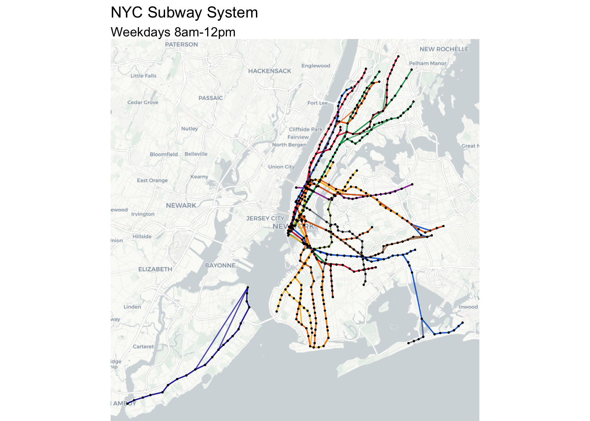
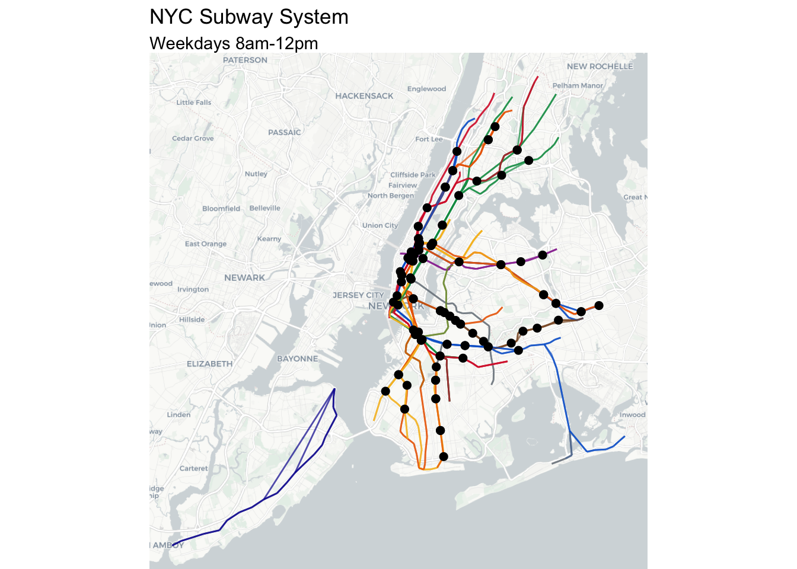
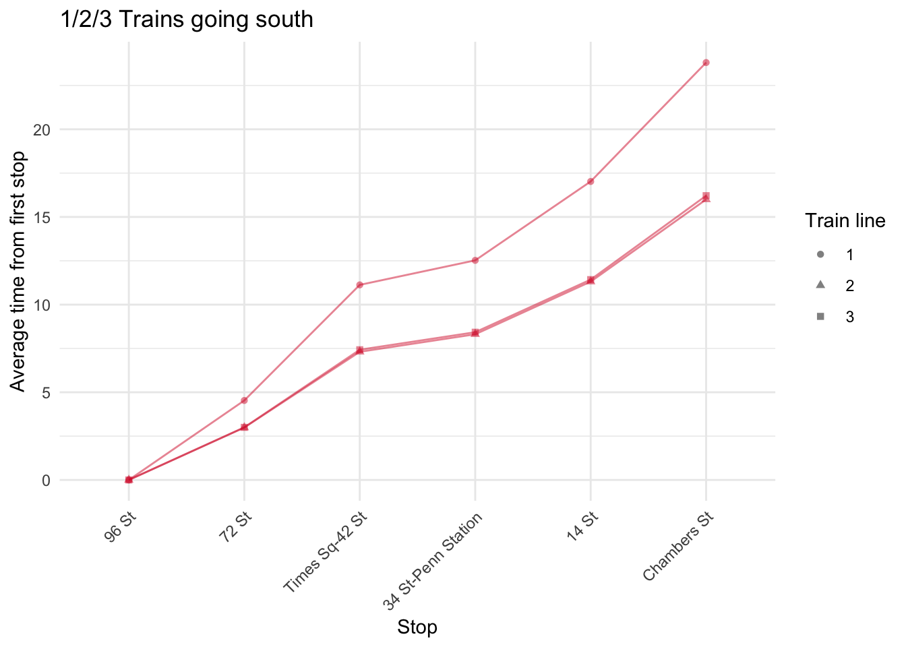
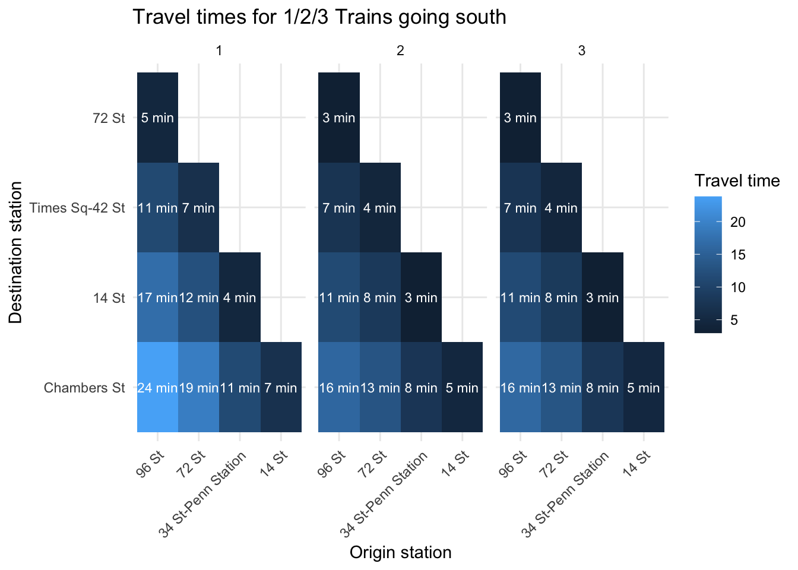

library(tidyverse)
library(tidytransit)
library(gtfsrouter)
library(sf)
library(ggspatial)
mta <- read_gtfs("https://rrgtfsfeeds.s3.amazonaws.com/gtfs_subway.zip")Here is a common problem I face: I live near a subway stop in New York City that has both express and local trains. If they arrive at the same time, it’s much faster to take the express train, which stops less frequently, than the local train, which makes every single stop.
The Metropolitan Transit Authority (MTA) helpfully displays the estimated time until the next train arrives at the station. Sometimes, I am trying to get from my stop at 96th Street to 34th Street. The local #1 train is waiting at the platform, about to leave, and the express #3 train is 3 minutes away. Should I wait?
Fortunately, the MTA publishes some data that can help with this. Their exact transit schedule is published and available as a GTFS (General Transit Feed Specification) feed. Basically, this is an easily accessible set of data tables that specifies the normal operating schedule of the entire NYC transit system.
So I figured I would solve my problem once and for all. Should you wait for the express train or just get on the local? Of course it depends on your start and end points. I also am assuming that everything is operating as normal, so I will not be taking into account construction or real-time delays. Finally, I am restricting this analysis to express stops where there are two possible trains. Of course in real life you might have a more complicated route, and it could even pay to switch on and off the express train between local endpoints if the timing is right. But ultimately it boils down to whether the fastest route between two express stations involves waiting for an express train, or taking a sooner-to-arrive local train.
I will be walking through the R code I used to do this. If you just want answers, skip down below.
Getting the data
Getting the data from MTA is fairly straightforward using the tidytransit R package.
The MTA subway data is a list of tables, containing various data on all the train routes and stops.
names(mta) [1] "agency" "calendar_dates" "calendar" "routes"
[5] "shapes" "stop_times" "stops" "transfers"
[9] "trips" "." The first thing we need to do is identify which stops are express stops. This can be quite complicated, especially since sometimes express trains run at specific times of day, and routes can change on the weekend. To start, let’s find, for each subway stop, what the next stop is for that trip. We will also filter for weekday, morning (9am-12pm) services.
adjacent_stops <-
# Get weekday trips
mta$trips |>
filter(service_id == "Weekday") |>
# Join with the stop times for these trips
inner_join(mta$stop_times, by = join_by("trip_id")) |>
filter(arrival_time >= hms("08:00:00") & arrival_time <= hms("12:00:00")) |>
# For each trip, get the stops and stop sequence
select(route_id,trip_id, stop_id, stop_sequence) |>
group_by(trip_id) |>
arrange(stop_sequence) |>
mutate(next_stop_id = lead(stop_id)) |>
filter(!is.na(next_stop_id)) |>
ungroup() |>
distinct(route_id,stop_id, next_stop_id)We now have a table of adjacent weekday stops, forming the subway network. What does this look like? We can join these adjacent stops with the stops table to get their geographic locations, and then map it.
# Get the lattitude and longitude for each stop
adj_stops_loc <- adjacent_stops |>
inner_join(mta$stops, by = join_by("stop_id" == "stop_id")) |>
inner_join(mta$stops, by = join_by("next_stop_id" == "stop_id"),
suffix = c("_orig","_dest")) |>
# add the route color
inner_join(mta$routes |>
select(route_id, route_color), by = "route_id") |>
mutate(route_color = str_c("#",route_color))
# Turn the origin-destination pairs into lines
network_lines <- adj_stops_loc |>
rowwise() |>
mutate(geometry = st_sfc(
st_linestring(
matrix(c(
stop_lon_orig, stop_lat_orig,
stop_lon_dest, stop_lat_dest
), ncol = 2, byrow = TRUE)),
crs = 4326)) |>
st_as_sf()
# Create a separate object for the stops (points)
network_points <- mta$stops |>
st_as_sf(coords = c("stop_lon", "stop_lat"), crs = 4326)
ggplot() +
annotation_map_tile("cartolight",zoom = 11) +
# Draw the subway lines
geom_sf(data = network_lines,
aes(color = route_color),
size = 0.5, alpha = 0.7) +
# Draw the stations
geom_sf(data = network_points, size = 0.2, color = "black") +
theme_void() +
labs(title = "NYC Subway System",
subtitle = "Weekdays 8am-12pm") +
scale_color_identity()
Great! We have successfully generated a map that looks a lot like the NYC subway map. It’s not an exact match, but its close.
Next, we can identify express stops. An express stop should have several characteristics:
The origin station should have multiple destinations (a local and an express destination)
There should be multiple routes that stop at the station (so that you could have the option to choose)
A destination station should have multiple origins, at least 1 of which should be an express origin
A destination station should also have multiple routes that stop at the station
There should be at least 2 trains at the origin station that are also at the destination station. We can do this by looking at the intersection of the routes that stop at each origin-destination station pair.
# Start with the origin stations
orig_stops_routes <- adj_stops_loc |>
group_by(stop_id) |>
summarize(num_destinations = n_distinct(next_stop_id),
dest_list = list(unique(next_stop_id)),
num_routes_orig = n_distinct(route_id),
route_list_orig = list(unique(route_id))) |>
# They should all have at least 2 destinations and 2 routes to be and express station
filter(num_destinations > 1,
num_routes_orig > 1)
# Destination stations
dest_stops_routes <- adj_stops_loc |>
group_by(next_stop_id) |>
summarize(num_origins = n_distinct(stop_id),
orig_list = list(unique(stop_id)),
num_routes_dest = n_distinct(route_id),
route_list_dest= list(unique(route_id))) |>
# Should all have 2 origins and 2 routes to be an express destination
filter(num_origins > 1,
num_routes_dest > 1)
express_stations_full <- adj_stops_loc |>
# Recreate those same columns basically
select(-route_color) |>
group_by(stop_id) |>
mutate(num_destination = n_distinct(next_stop_id),
dest_list = list(unique(next_stop_id)),
num_routes_orig = n_distinct(route_id),
route_list_orig = map(list(unique(route_id)),sort)) |>
group_by(next_stop_id) |>
mutate(num_origins = n_distinct(stop_id),
orig_list = list(unique(stop_id)),
num_routes_dest = n_distinct(route_id),
route_list_dest= map(list(unique(route_id)),sort)) |>
ungroup() |>
# Filter only the origins and destinations from above
filter(stop_id %in% orig_stops_routes$stop_id,
next_stop_id %in% dest_stops_routes$next_stop_id) |>
mutate(routes_intersect = map2(route_list_orig, route_list_dest, intersect),
num_routes_intersect = map_dbl(routes_intersect, length)) |>
# The origin an destination should have at least 2 overlapping train lines too
filter(num_routes_intersect > 1) |>
select(-route_id) |>
distinct()
express_stations <-
express_stations_full |>
ungroup() |>
select(parent_station_orig) |>
distinct()Now that we have our express stations we can take a quick look at them on a map again
# Create a separate object for the stops (points)
express_points <- express_stations_full |>
st_as_sf(coords = c("stop_lon_orig", "stop_lat_orig"), crs = 4326)
ggplot() +
annotation_map_tile("cartolight",zoom = 11) +
# Draw the subway lines
geom_sf(data = network_lines,
aes(color = route_color),
size = 0.5, alpha = 0.7) +
# Draw the stations
geom_sf(data = express_points,
size = 2, color = "black") +
theme_void() +
labs(title = "NYC Subway System",
subtitle = "Weekdays 8am-12pm") +
scale_color_identity()
Now bad! This probably isn’t a perfect list of express stops, but I think it’s a pretty good list. I tried to verify it manually by referring to the real subway map, although I may have accidentally included some stops or missed others.
Finally, we can calculate a time between stations on the same lines.
# First get the general arrival times of stations relative to the origin stop
travel_times <- mta$stop_times |>
inner_join(
mta$trips |>
select(trip_id, route_id, service_id, direction_id)
) |>
filter(
service_id == "Weekday",
arrival_time >= hms("08:00:00") & arrival_time <= hms("12:00:00")
) |>
group_by(trip_id) |>
# Make sure the first stop is present, for timing purposes
filter(any(stop_sequence == 1)) |>
# Calculate avg time of departure, and relative time of arrival at station
mutate(
start_time = min(departure_time),
station_time = arrival_time - start_time
) |>
group_by(route_id, direction_id, stop_id) |>
# get average and number of trips
summarize(avg_station_time = mean(station_time), num_trips = n()) |>
mutate(direction_letter = str_sub(stop_id, -1, -1)) |>
inner_join(mta$stops) |>
ungroup()Now, join each express travel time to every other stop with the same route and direction.
travel_time_grid <- travel_times |>
# Select columns and join to itself so that we get all origin and destination pairs
select(
route_id,
direction_letter,
stop_id,
stop_name,
avg_station_time,
num_trips
) |>
full_join(
travel_times |>
select(route_id, direction_letter, stop_id, stop_name, avg_station_time),
by = c("route_id", "direction_letter"),
relationship = "many-to-many",
suffix = c("_orig", "_dest")
) |>
# make sure destination is after origin
filter(avg_station_time_dest > avg_station_time_orig) |>
# filter so that we only get express stops
filter(
stop_id_orig %in% express_stations_full$stop_id,
stop_id_dest %in% express_stations_full$next_stop_id
) |>
# calculate lag times
mutate(
lag_time = hms::hms(as.numeric(
avg_station_time_dest - avg_station_time_orig
))
) |>
group_by(stop_id_orig, stop_id_dest) |>
# enforce minimum number of trips for quality
filter(num_trips > 3) |>
# some better route list formatting
mutate(
route_list = list(unique(route_id)),
route_list = map_chr(route_list, \(x) str_c(sort(x), collapse = "/")),
full_name_orig = str_c(stop_name_orig, " ", route_list)
) |>
# ensure that there is >1 route stopping
filter(str_length(route_list) > 1) |>
# get route colors
inner_join(
mta$routes |>
select(route_id, route_color),
by = "route_id"
) |>
mutate(route_color = str_c("#", route_color)) |>
ungroup() |>
# cut stops where the absolute time difference is less than a minute and there are only 2 trains
mutate(
.by = c(stop_id_orig, stop_id_dest, route_list),
keep = case_when(
str_length(route_list) == 3 &
abs(lag_time - lag(lag_time)) < hms("00:00:59") ~ 0,
str_length(route_list) == 3 &
abs(lag_time - lead(lag_time)) < hms("00:00:59") ~ 0,
.default = 1
)
) |>
group_by(stop_name_orig, route_list, stop_name_dest) |>
arrange(lag_time) |>
mutate(wait_time = round(as.numeric(last(lag_time) - lag_time) / 60)) |>
filter(any(wait_time > 0))
write_csv(travel_time_grid, "travel_time_grid.csv")Finally, can we visualize these results at all? To keep things simple, we will focus on a single train line and group of stops, the 1/2/3 going southbound.
travel_times |>
inner_join(mta$routes |>
select(route_id, route_color),
by = "route_id") |>
mutate(route_color = str_c("#",route_color)) |>
ungroup() |>
filter(
stop_id %in%
travel_time_grid$stop_id_orig |
stop_id %in% travel_time_grid$stop_id_dest
) |>
group_by(stop_id) |>
mutate(
route_list = list(unique(route_id)),
route_list = map_chr(route_list, \(x) str_c(sort(x), collapse = "/"))
) |>
filter(direction_letter == "S", route_list == "1/2/3") |>
select(route_id, stop_id,direction_letter, route_list, stop_name, avg_station_time,route_color) |>
group_by(route_list,route_id) |>
arrange(avg_station_time) |>
mutate(
wait_time = as.numeric(avg_station_time - first(avg_station_time)) / 60
) |>
ungroup() |>
ggplot(aes(
x = reorder(stop_name, wait_time),
y = wait_time,
color = I(route_color),
shape = route_id,
group = route_id
)) +
geom_point(alpha = 0.5) +
geom_line(alpha = 0.5) +
labs(x = "Stop",
y = "Average time from first stop",
shape = "Train line",
title = "1/2/3 Trains going south") +
theme_minimal() +
theme(axis.text.x = element_text(angle = 45, hjust = 1))
You can see that, starting from the northmost station at 96 St, the gap gets wider and wider as you go south. The 2 and 3 trains are both express and are nearly overlapping. If you are traveling between intermediate stations, you would really be interested in the difference between those gaps, not the gaps themselves.
Here’s another way of looking at the same data:
travel_time_grid |>
filter(direction_letter == "S", route_list == "1/2/3") |>
mutate(lag_time = as.numeric(lag_time) / 60) |>
ggplot(aes(
x = reorder(stop_name_orig, -lag_time),
y = reorder(stop_name_dest, -lag_time),
fill = lag_time,
label = str_c(round(lag_time), " min")
)) +
geom_tile() +
geom_text(color = "white", size =3) +
facet_wrap(~route_id) +
theme_minimal() +
labs(
x = "Origin station",
y = "Destination station",
title = "Travel times for 1/2/3 Trains going south",
fill = "Travel time"
) +
theme(axis.text.x = element_text(angle = 45, hjust = 1))
You can see here how the travel times between pairs of stations vary. Stating from 72 St and going to 14 St for example, the 1 train takes 12 minutes while the 2 and 3 trains take 8 minutes.
Should you wait?
I have compiled the data here into a convenient tool so that you can look at a given stop, the train line, and destination, and see how long you should wait for the express. Rather than give you the travel time, the tool simply tells you, if the local train is already at the station, what is the maximum amount of time you should wait for the express train in order to arrive at your destination sooner.
#| '!! shinylive warning !!': |
#| shinylive does not work in self-contained HTML documents.
#| Please set `embed-resources: false` in your metadata.
#| standalone: true
#| viewerHeight: 600
#| resources:
#| - travel_time_grid.csv
library(shiny)
library(bslib)
library(dplyr)
library(ggplot2)
travel_time_grid <- readr::read_csv("travel_time_grid.csv")
ui <- page_sidebar(
sidebar = sidebar(open = "open",
uiOutput("orig_select"),
uiOutput("train_select"),
uiOutput("dest_select")
),
card(plotOutput("plot"),
max_height = "400px")
)
server <- function(input, output, session) {
output$orig_select <- renderUI({
origin_station_list <- travel_time_grid |>
pull(stop_name_orig) |>
unique() |>
sort()
selectInput("orig_select_input","Select Origin",
choices = origin_station_list)
})
output$train_select <- renderUI({
req(input$orig_select_input)
train_options <- travel_time_grid |>
filter(stop_name_orig == input$orig_select_input) |>
pull(route_list) |>
unique() |>
sort()
selectInput("train_select_input","Select trains",
choices = train_options)
})
output$dest_select <- renderUI({
req(input$orig_select_input, input$train_select_input)
dest_station_list <- travel_time_grid |>
filter(stop_name_orig == input$orig_select_input,
route_list == input$train_select_input) |>
pull(stop_name_dest) |>
unique() |>
sort()
selectInput("dest_select_input","Select Destination",
choices = dest_station_list)
})
output$plot <- renderPlot({
req(input$orig_select_input, input$dest_select_input)
df <- travel_time_grid |>
ungroup() |>
filter(stop_name_orig == input$orig_select_input,
route_list == input$train_select_input,
stop_name_dest == input$dest_select_input) |>
select(route_id, direction_letter, lag_time, route_color) |>
arrange(lag_time) |>
mutate(wait_time = last(lag_time) - lag_time) |>
mutate(wait_time_minutes = round(as.numeric(wait_time)/60),
wait_time_minutes = case_when(wait_time_minutes == 0 ~ "If this train is at the station...",
.default = paste0("Wait no more than ", wait_time_minutes," minutes")))
df |>
ggplot(aes(x = 1, y = reorder(route_id, -wait_time))) +
geom_point(aes(color = I(route_color)), size = 30) +
geom_text(aes(label = route_id),
color = "white",
fontface = "bold", size = 15) +
geom_text(aes(x = 1.7, label = wait_time_minutes),
hjust = 1, size = 5, fontface = "bold", family = "sans") +
scale_x_continuous(limits = c(0.8, 2)) +
theme_void()
})
}
shinyApp(ui = ui, server = server)
## file: travel_time_grid.csv
route_id,direction_letter,stop_id_orig,stop_name_orig,avg_station_time_orig,num_trips,stop_id_dest,stop_name_dest,avg_station_time_dest,lag_time,route_list,full_name_orig,route_color,keep,wait_time
N,N,R14N,57 St-7 Av,3510,22,B08N,Lexington Av/63 St,3600,00:01:30.000000,N/Q,57 St-7 Av N/Q,#F6BC26,1,2
B,N,D28N,Church Av,903.214285714286,28,D26N,Prospect Park,1023.21428571429,00:02:00.000000,B/Q,Church Av B/Q,#EB6800,1,1
B,S,D26S,Prospect Park,3643.63636363636,22,D28S,Church Av,3763.63636363636,00:02:00.000000,B/Q,Prospect Park B/Q,#EB6800,1,1
D,S,A24S,59 St-Columbus Circle,1976.78571428571,28,D14S,7 Av,2100,00:02:03.214286,B/D,59 St-Columbus Circle B/D,#EB6800,0,1
A,N,A48N,Utica Av,1807.74193548387,31,A46N,Nostrand Av,1937,00:02:09.258065,A/C,Utica Av A/C,#0062CF,1,1
N,S,R17S,34 St-Herald Sq,1474.44444444444,27,R20S,14 St-Union Sq,1621.15384615385,00:02:26.709402,N/Q/R/W,34 St-Herald Sq N/Q/R/W,#F6BC26,1,2
5,N,631N,Grand Central-42 St,2182.05882352941,34,629N,59 St,2332.05882352941,00:02:30.000000,4/5/6,Grand Central-42 St 4/5/6,#009952,1,1
A,N,A34N,Canal St,2863.92857142857,28,A32N,W 4 St-Wash Sq,3013.92857142857,00:02:30.000000,A/C/E,Canal St A/C/E,#0062CF,1,2
A,S,A32S,W 4 St-Wash Sq,2049,30,A34S,Canal St,2199,00:02:30.000000,A/C/E,W 4 St-Wash Sq A/C/E,#0062CF,1,1
A,S,A46S,Nostrand Av,3102.85714285714,28,A48S,Utica Av,3252.85714285714,00:02:30.000000,A/C,Nostrand Av A/C,#0062CF,1,1
E,N,G08N,Forest Hills-71 Av,2255.85365853659,41,F06N,Kew Gardens-Union Tpke,2405.85365853659,00:02:30.000000,E/F,Forest Hills-71 Av E/F,#0062CF,1,1
A,S,A24S,59 St-Columbus Circle,1484.0625,32,A27S,42 St-Port Authority Bus Terminal,1634.51612903226,00:02:30.453629,A/C,59 St-Columbus Circle A/C,#0062CF,1,2
4,N,631N,Grand Central-42 St,1836.66666666667,36,629N,59 St,1989.42857142857,00:02:32.761905,4/5/6,Grand Central-42 St 4/5/6,#009952,1,1
3,N,132N,14 St,2626.15384615385,26,128N,34 St-Penn Station,2779.61538461538,00:02:33.461538,1/2/3,14 St 1/2/3,#D82233,1,2
Q,S,R17S,34 St-Herald Sq,897.096774193548,31,R20S,14 St-Union Sq,1051.93548387097,00:02:34.838710,N/Q/R/W,34 St-Herald Sq N/Q/R/W,#F6BC26,1,2
2,N,132N,14 St,2410.34482758621,29,128N,34 St-Penn Station,2568.21428571429,00:02:37.869458,1/2/3,14 St 1/2/3,#D82233,1,2
B,S,A24S,59 St-Columbus Circle,1758.46153846154,26,D14S,7 Av,1920,00:02:41.538462,B/D,59 St-Columbus Circle B/D,#EB6800,0,0
B,S,D17S,34 St-Herald Sq,2190,25,D20S,W 4 St-Wash Sq,2357.5,00:02:47.500000,B/D/F/M,34 St-Herald Sq B/D/F/M,#EB6800,1,3
5,S,629S,59 St,2643.33333333333,27,631S,Grand Central-42 St,2820,00:02:56.666667,4/5/6/6X,59 St 4/5/6/6X,#009952,1,1
B,N,D31N,Newkirk Plaza,724.137931034483,29,D28N,Church Av,903.214285714286,00:02:59.076355,B/Q,Newkirk Plaza B/Q,#EB6800,1,1
2,S,120S,96 St,2923.84615384615,26,123S,72 St,3103.2,00:02:59.353846,1/2/3,96 St 1/2/3,#D82233,1,2
3,N,123N,72 St,3081.6,25,120N,96 St,3261.6,00:03:00.000000,1/2/3,72 St 1/2/3,#D82233,1,2
3,S,120S,96 St,793.125,32,123S,72 St,973.125,00:03:00.000000,1/2/3,96 St 1/2/3,#D82233,1,2
3,S,128S,34 St-Penn Station,1298.70967741935,31,132S,14 St,1478.70967741935,00:03:00.000000,1/2/3,34 St-Penn Station 1/2/3,#D82233,1,2
D,S,D17S,34 St-Herald Sq,2372.22222222222,27,D20S,W 4 St-Wash Sq,2552.22222222222,00:03:00.000000,B/D/F/M,34 St-Herald Sq B/D/F/M,#EB6800,1,3
E,S,A32S,W 4 St-Wash Sq,2529.16666666667,36,A34S,Canal St,2709.16666666667,00:03:00.000000,A/C/E,W 4 St-Wash Sq A/C/E,#0062CF,1,0
Q,N,D28N,Church Av,1538.57142857143,28,D26N,Prospect Park,1718.57142857143,00:03:00.000000,B/Q,Church Av B/Q,#F6BC26,1,0
Q,S,D26S,Prospect Park,2282.14285714286,28,D28S,Church Av,2462.14285714286,00:03:00.000000,B/Q,Prospect Park B/Q,#F6BC26,1,0
2,S,128S,34 St-Penn Station,3422.4,25,132S,14 St,3602.5,00:03:00.100000,1/2/3,34 St-Penn Station 1/2/3,#D82233,1,1
Q,N,R16N,Times Sq-42 St,3245,24,R14N,57 St-7 Av,3427.5,00:03:02.500000,N/Q/R/W,Times Sq-42 St N/Q/R/W,#F6BC26,1,1
B,S,D28S,Church Av,3763.63636363636,22,D31S,Newkirk Plaza,3947.14285714286,00:03:03.506494,B/Q,Church Av B/Q,#EB6800,0,1
Q,N,R20N,14 St-Union Sq,2968.8,25,R17N,34 St-Herald Sq,3152.5,00:03:03.700000,N/Q/R/W,14 St-Union Sq N/Q/R/W,#F6BC26,1,1
N,N,R20N,14 St-Union Sq,2967.5,24,R17N,34 St-Herald Sq,3151.30434782609,00:03:03.804348,N/Q/R/W,14 St-Union Sq N/Q/R/W,#F6BC26,1,1
2,N,123N,72 St,2868.21428571429,28,120N,96 St,3052.22222222222,00:03:04.007937,1/2/3,72 St 1/2/3,#D82233,1,2
Q,N,R14N,57 St-7 Av,3427.5,24,B08N,Lexington Av/63 St,3612.5,00:03:05.000000,N/Q,57 St-7 Av N/Q,#F6BC26,1,0
4,S,629S,59 St,2200,30,631S,Grand Central-42 St,2385.51724137931,00:03:05.517241,4/5/6/6X,59 St 4/5/6/6X,#009952,1,1
C,N,A31N,14 St,2422.17391304348,23,A28N,34 St-Penn Station,2612.72727272727,00:03:10.553360,A/C/E,14 St A/C/E,#0062CF,1,1
A,N,A15N,125 St,4099.61538461538,26,A12N,145 St,4291.15384615385,00:03:11.538462,A/C,125 St A/C,#0062CF,0,1
E,S,F06S,Kew Gardens-Union Tpke,431.707317073171,41,G08S,Forest Hills-71 Av,627.80487804878,00:03:16.097561,E/F,Kew Gardens-Union Tpke E/F,#0062CF,0,1
C,S,A32S,W 4 St-Wash Sq,1982.5,24,A34S,Canal St,2188.69565217391,00:03:26.195652,A/C/E,W 4 St-Wash Sq A/C/E,#0062CF,1,0
5,N,629N,59 St,2332.05882352941,34,626N,86 St,2539.09090909091,00:03:27.032086,4/5/6,59 St 4/5/6,#009952,1,2
B,N,D20N,W 4 St-Wash Sq,2278.84615384615,26,D17N,34 St-Herald Sq,2488.8,00:03:29.953846,B/D/F/M,W 4 St-Wash Sq B/D/F/M,#EB6800,1,2
A,S,A09S,168 St,570,33,A12S,145 St,780,00:03:30.000000,A/C,168 St A/C,#0062CF,1,1
A,S,A48S,Utica Av,3252.85714285714,28,A51S,Broadway Junction,3462.85714285714,00:03:30.000000,A/C,Utica Av A/C,#0062CF,1,2
C,S,A46S,Nostrand Av,3248.57142857143,21,A48S,Utica Av,3458.57142857143,00:03:30.000000,A/C,Nostrand Av A/C,#0062CF,1,0
N,S,R36S,36 St,2910,24,R41S,59 St,3120,00:03:30.000000,N/R,36 St N/R,#F6BC26,1,2
4,N,629N,59 St,1989.42857142857,35,626N,86 St,2199.42857142857,00:03:30.000000,4/5/6,59 St 4/5/6,#009952,1,2
A,N,A51N,Broadway Junction,1595.8064516129,31,A48N,Utica Av,1807.74193548387,00:03:31.935484,A/C,Broadway Junction A/C,#0062CF,1,2
6,S,629S,59 St,2002.75862068966,29,631S,Grand Central-42 St,2215.71428571429,00:03:32.955665,4/5/6/6X,59 St 4/5/6/6X,#009952,1,0
D,S,A24S,59 St-Columbus Circle,1976.78571428571,28,D15S,47-50 Sts-Rockefeller Ctr,2190,00:03:33.214286,B/D,59 St-Columbus Circle B/D,#EB6800,0,1
E,N,A34N,Canal St,120,47,A32N,W 4 St-Wash Sq,336.382978723404,00:03:36.382979,A/C/E,Canal St A/C/E,#0062CF,1,1
6X,S,629S,59 St,2499.6,25,631S,Grand Central-42 St,2716.8,00:03:37.200000,4/5/6/6X,59 St 4/5/6/6X,#009952,1,0
A,S,A12S,145 St,780,33,A15S,125 St,997.272727272727,00:03:37.272727,A/C,145 St A/C,#0062CF,0,1
A,N,A31N,14 St,3147.85714285714,28,A28N,34 St-Penn Station,3366.66666666667,00:03:38.809524,A/C/E,14 St A/C/E,#0062CF,1,0
C,N,A48N,Utica Av,738.461538461538,26,A46N,Nostrand Av,957.692307692308,00:03:39.230769,A/C,Utica Av A/C,#0062CF,1,0
D,N,D20N,W 4 St-Wash Sq,3108.75,24,D17N,34 St-Herald Sq,3330,00:03:41.250000,B/D/F/M,W 4 St-Wash Sq B/D/F/M,#EB6800,1,1
5,N,635N,14 St-Union Sq,1959.42857142857,35,631N,Grand Central-42 St,2182.05882352941,00:03:42.630252,4/5/6,14 St-Union Sq 4/5/6,#009952,1,2
E,N,A31N,14 St,500.869565217391,46,A28N,34 St-Penn Station,726,00:03:45.130435,A/C/E,14 St A/C/E,#0062CF,1,0
4,N,635N,14 St-Union Sq,1610.83333333333,36,631N,Grand Central-42 St,1836.66666666667,00:03:45.833333,4/5/6,14 St-Union Sq 4/5/6,#009952,1,2
F,N,G08N,Forest Hills-71 Av,4667.77777777778,27,F06N,Kew Gardens-Union Tpke,4898.07692307692,00:03:50.299145,E/F,Forest Hills-71 Av E/F,#EB6800,1,0
6,N,631N,Grand Central-42 St,814.21875,64,629N,59 St,1044.7619047619,00:03:50.543155,4/5/6,Grand Central-42 St 4/5/6,#009952,1,0
4,N,250N,Crown Hts-Utica Av,0,38,239N,Franklin Av-Medgar Evers College,231.315789473684,00:03:51.315789,3/4,Crown Hts-Utica Av 3/4,#009952,1,2
7X,S,702S,Mets-Willets Point,171,20,707S,Junction Blvd,405,00:03:54.000000,7/7X,Mets-Willets Point 7/7X,#9A38A1,1,1
N,N,R16N,Times Sq-42 St,3275.21739130435,23,R14N,57 St-7 Av,3510,00:03:54.782609,N/Q/R/W,Times Sq-42 St N/Q/R/W,#F6BC26,1,0
A,N,A12N,145 St,4291.15384615385,26,A09N,168 St,4527.6,00:03:56.446154,A/C,145 St A/C,#0062CF,1,2
2,N,127N,Times Sq-42 St,2628.21428571429,28,123N,72 St,2868.21428571429,00:04:00.000000,1/2/3,Times Sq-42 St 1/2/3,#D82233,1,3
5,S,235S,Atlantic Av-Barclays Ctr,4245.71428571429,21,239S,Franklin Av-Medgar Evers College,4485.71428571429,00:04:00.000000,2/3/4/5,Atlantic Av-Barclays Ctr 2/3/4/5,#009952,1,3
B,N,D39N,Sheepshead Bay,120,30,D35N,Kings Hwy,360,00:04:00.000000,B/Q,Sheepshead Bay B/Q,#EB6800,1,1
F,S,F06S,Kew Gardens-Union Tpke,570,40,G08S,Forest Hills-71 Av,810,00:04:00.000000,E/F,Kew Gardens-Union Tpke E/F,#EB6800,0,0
Q,S,D28S,Church Av,2462.14285714286,28,D31S,Newkirk Plaza,2702.22222222222,00:04:00.079365,B/Q,Church Av B/Q,#F6BC26,0,0
R,N,R16N,Times Sq-42 St,3189.6,25,R14N,57 St-7 Av,3430,00:04:00.400000,N/Q/R/W,Times Sq-42 St N/Q/R/W,#F6BC26,1,0
3,N,127N,Times Sq-42 St,2839.61538461538,26,123N,72 St,3081.6,00:04:01.984615,1/2/3,Times Sq-42 St 1/2/3,#D82233,1,3
D,S,D13S,145 St,1249.65517241379,29,A15S,125 St,1492.75862068966,00:04:03.103448,B/D,145 St B/D,#EB6800,0,1
A,N,A27N,42 St-Port Authority Bus Terminal,3441.11111111111,27,A24N,59 St-Columbus Circle,3684.44444444444,00:04:03.333333,A/C,42 St-Port Authority Bus Terminal A/C,#0062CF,1,1
C,N,A15N,125 St,3784.5,20,A12N,145 St,4027.89473684211,00:04:03.394737,A/C,125 St A/C,#0062CF,0,0
W,N,R16N,Times Sq-42 St,1185,22,R14N,57 St-7 Av,1433.18181818182,00:04:08.181818,N/Q/R/W,Times Sq-42 St N/Q/R/W,#F6BC26,1,0
R,N,R20N,14 St-Union Sq,2821.2,25,R17N,34 St-Herald Sq,3069.6,00:04:08.400000,N/Q/R/W,14 St-Union Sq N/Q/R/W,#F6BC26,1,0
C,S,A24S,59 St-Columbus Circle,1304.4,25,A27S,42 St-Port Authority Bus Terminal,1555.2,00:04:10.800000,A/C,59 St-Columbus Circle A/C,#0062CF,1,0
4,S,235S,Atlantic Av-Barclays Ctr,3834.44444444444,27,239S,Franklin Av-Medgar Evers College,4085.76923076923,00:04:11.324786,2/3/4/5,Atlantic Av-Barclays Ctr 2/3/4/5,#009952,1,3
B,S,A24S,59 St-Columbus Circle,1758.46153846154,26,D15S,47-50 Sts-Rockefeller Ctr,2010,00:04:11.538462,B/D,59 St-Columbus Circle B/D,#EB6800,0,0
W,N,R20N,14 St-Union Sq,813.913043478261,23,R17N,34 St-Herald Sq,1065.65217391304,00:04:11.739130,N/Q/R/W,14 St-Union Sq N/Q/R/W,#F6BC26,1,0
R,S,R17S,34 St-Herald Sq,2166.92307692308,26,R20S,14 St-Union Sq,2419.61538461538,00:04:12.692308,N/Q/R/W,34 St-Herald Sq N/Q/R/W,#F6BC26,1,0
C,S,A12S,145 St,270,27,A15S,125 St,523.333333333333,00:04:13.333333,A/C,145 St A/C,#0062CF,0,0
E,N,F06N,Kew Gardens-Union Tpke,2405.85365853659,41,F03N,Parsons Blvd,2660,00:04:14.146341,E/F,Kew Gardens-Union Tpke E/F,#0062CF,1,1
Q,N,D31N,Newkirk Plaza,1280.35714285714,28,D28N,Church Av,1538.57142857143,00:04:18.214286,B/Q,Newkirk Plaza B/Q,#F6BC26,1,0
W,S,R17S,34 St-Herald Sq,1516.25,24,R20S,14 St-Union Sq,1775,00:04:18.750000,N/Q/R/W,34 St-Herald Sq N/Q/R/W,#F6BC26,1,0
2,S,123S,72 St,3103.2,25,127S,Times Sq-42 St,3362.4,00:04:19.200000,1/2/3,72 St 1/2/3,#D82233,1,2
3,S,123S,72 St,973.125,32,127S,Times Sq-42 St,1238.70967741935,00:04:25.584677,1/2/3,72 St 1/2/3,#D82233,1,2
5,S,626S,86 St,2377.5,28,629S,59 St,2643.33333333333,00:04:25.833333,4/5/6/6X,86 St 4/5/6/6X,#009952,1,1
5,S,631S,Grand Central-42 St,2820,27,635S,14 St-Union Sq,3086.53846153846,00:04:26.538462,4/5/6/6X,Grand Central-42 St 4/5/6/6X,#009952,1,2
B,S,D31S,Newkirk Plaza,3947.14285714286,21,D35S,Kings Hwy,4217.14285714286,00:04:30.000000,B/Q,Newkirk Plaza B/Q,#EB6800,1,2
1,N,132N,14 St,686.037735849057,53,128N,34 St-Penn Station,956.037735849057,00:04:30.000000,1/2/3,14 St 1/2/3,#D82233,1,0
1,S,128S,34 St-Penn Station,2252.79069767442,43,132S,14 St,2522.79069767442,00:04:30.000000,1/2/3,34 St-Penn Station 1/2/3,#D82233,1,0
2,N,137N,Chambers St,2140.34482758621,29,132N,14 St,2410.34482758621,00:04:30.000000,1/2/3,Chambers St 1/2/3,#D82233,1,3
C,S,A09S,168 St,0,28,A12S,145 St,270,00:04:30.000000,A/C,168 St A/C,#0062CF,1,0
A,S,A42S,Hoyt-Schermerhorn Sts,2831.37931034483,29,A46S,Nostrand Av,3102.85714285714,00:04:31.477833,A/C,Hoyt-Schermerhorn Sts A/C,#0062CF,1,2
3,N,137N,Chambers St,2354.44444444444,27,132N,14 St,2626.15384615385,00:04:31.709402,1/2/3,Chambers St 1/2/3,#D82233,1,3
1,S,120S,96 St,1501.33333333333,45,123S,72 St,1773.33333333333,00:04:32.000000,1/2/3,96 St 1/2/3,#D82233,1,0
C,N,A34N,Canal St,2000,24,A32N,W 4 St-Wash Sq,2272.17391304348,00:04:32.173913,A/C/E,Canal St A/C/E,#0062CF,1,0
N,N,R41N,59 St,1308.88888888889,27,R36N,36 St,1583.07692307692,00:04:34.188034,N/R,59 St N/R,#F6BC26,0,1
5,S,621S,125 St,2102.14285714286,28,626S,86 St,2377.5,00:04:35.357143,4/5/6/6X,125 St 4/5/6/6X,#009952,1,4
4,S,631S,Grand Central-42 St,2385.51724137931,29,635S,14 St-Union Sq,2661.72413793103,00:04:36.206897,4/5/6/6X,Grand Central-42 St 4/5/6/6X,#009952,1,2
4,S,626S,86 St,1923,30,629S,59 St,2200,00:04:37.000000,4/5/6/6X,86 St 4/5/6/6X,#009952,1,1
4,S,621S,125 St,1644.1935483871,31,626S,86 St,1923,00:04:38.806452,4/5/6/6X,125 St 4/5/6/6X,#009952,1,4
5,N,640N,Brooklyn Bridge-City Hall,1679.14285714286,35,635N,14 St-Union Sq,1959.42857142857,00:04:40.285714,4/5/6,Brooklyn Bridge-City Hall 4/5/6,#009952,1,3
2,S,132S,14 St,3602.5,24,137S,Chambers St,3883.75,00:04:41.250000,1/2/3,14 St 1/2/3,#D82233,1,2
4,N,640N,Brooklyn Bridge-City Hall,1327.2972972973,37,635N,14 St-Union Sq,1610.83333333333,00:04:43.536036,4/5/6,Brooklyn Bridge-City Hall 4/5/6,#009952,1,3
B,S,D07S,Tremont Av,420,19,D13S,145 St,705,00:04:45.000000,B/D,Tremont Av B/D,#EB6800,1,5
B,S,D13S,145 St,705,28,A15S,125 St,991.111111111111,00:04:46.111111,B/D,145 St B/D,#EB6800,0,0
3,S,132S,14 St,1478.70967741935,31,137S,Chambers St,1766,00:04:47.290323,1/2/3,14 St 1/2/3,#D82233,1,2
7,S,702S,Mets-Willets Point,137.727272727273,44,707S,Junction Blvd,427.674418604651,00:04:49.947146,7/7X,Mets-Willets Point 7/7X,#9A38A1,1,0
1,N,123N,72 St,1442.94117647059,51,120N,96 St,1737,00:04:54.058824,1/2/3,72 St 1/2/3,#D82233,1,0
F,N,D20N,W 4 St-Wash Sq,2959.35483870968,31,D17N,34 St-Herald Sq,3255,00:04:55.645161,B/D/F/M,W 4 St-Wash Sq B/D/F/M,#EB6800,1,0
B,N,D31N,Newkirk Plaza,724.137931034483,29,D26N,Prospect Park,1023.21428571429,00:04:59.076355,B/Q,Newkirk Plaza B/Q,#EB6800,1,2
Q,S,D35S,Kings Hwy,3108.46153846154,26,D39S,Sheepshead Bay,3408.46153846154,00:05:00.000000,B/Q,Kings Hwy B/Q,#F6BC26,0,1
C,S,A48S,Utica Av,3458.57142857143,21,A51S,Broadway Junction,3760.5,00:05:01.928571,A/C,Utica Av A/C,#0062CF,1,0
B,S,D26S,Prospect Park,3643.63636363636,22,D31S,Newkirk Plaza,3947.14285714286,00:05:03.506494,B/Q,Prospect Park B/Q,#EB6800,1,2
M,N,D20N,W 4 St-Wash Sq,2063.33333333333,27,D17N,34 St-Herald Sq,2367.77777777778,00:05:04.444444,B/D/F/M,W 4 St-Wash Sq B/D/F/M,#EB6800,1,0
F,S,G14S,Jackson Hts-Roosevelt Av,1147.69230769231,39,G21S,Queens Plaza,1453.84615384615,00:05:06.153846,E/F/R,Jackson Hts-Roosevelt Av E/F/R,#EB6800,1,5
A,N,A46N,Nostrand Av,1937,30,A42N,Hoyt-Schermerhorn Sts,2244,00:05:07.000000,A/C,Nostrand Av A/C,#0062CF,1,2
6,N,629N,59 St,1044.7619047619,63,626N,86 St,1351.93548387097,00:05:07.173579,4/5/6,59 St 4/5/6,#009952,1,0
E,S,G14S,Jackson Hts-Roosevelt Av,966.75,40,G21S,Queens Plaza,1274.61538461538,00:05:07.865385,E/F/R,Jackson Hts-Roosevelt Av E/F/R,#0062CF,1,5
A,S,A51S,Broadway Junction,3462.85714285714,28,A55S,Euclid Av,3771.11111111111,00:05:08.253968,A/C,Broadway Junction A/C,#0062CF,1,2
Q,N,D39N,Sheepshead Bay,456.774193548387,31,D35N,Kings Hwy,765.51724137931,00:05:08.743048,B/Q,Sheepshead Bay B/Q,#F6BC26,1,0
C,N,A51N,Broadway Junction,427.777777777778,27,A48N,Utica Av,738.461538461538,00:05:10.683761,A/C,Broadway Junction A/C,#0062CF,1,0
C,N,A27N,42 St-Port Authority Bus Terminal,2702.72727272727,22,A24N,59 St-Columbus Circle,3013.63636363636,00:05:10.909091,A/C,42 St-Port Authority Bus Terminal A/C,#0062CF,1,0
4,S,239S,Franklin Av-Medgar Evers College,4085.76923076923,26,250S,Crown Hts-Utica Av,4402.8,00:05:17.030769,2/3/4,Franklin Av-Medgar Evers College 2/3/4,#009952,1,2
F,N,F06N,Kew Gardens-Union Tpke,4898.07692307692,26,F03N,Parsons Blvd,5215.2,00:05:17.123077,E/F,Kew Gardens-Union Tpke E/F,#EB6800,1,0
5,S,635S,14 St-Union Sq,3086.53846153846,26,640S,Brooklyn Bridge-City Hall,3406.15384615385,00:05:19.615385,4/5/6/6X,14 St-Union Sq 4/5/6/6X,#009952,1,3
4,N,239N,Franklin Av-Medgar Evers College,231.315789473684,38,235N,Atlantic Av-Barclays Ctr,552.972972972973,00:05:21.657183,2/3/4/5,Franklin Av-Medgar Evers College 2/3/4/5,#009952,1,2
7X,S,707S,Junction Blvd,405,20,712S,61 St-Woodside,727.5,00:05:22.500000,7/7X,Junction Blvd 7/7X,#9A38A1,1,2
5,N,626N,86 St,2539.09090909091,33,621N,125 St,2861.81818181818,00:05:22.727273,4/5/6,86 St 4/5/6,#009952,1,2
4,N,626N,86 St,2199.42857142857,35,621N,125 St,2523.52941176471,00:05:24.100840,4/5/6,86 St 4/5/6,#009952,1,2
N,N,R16N,Times Sq-42 St,3275.21739130435,23,B08N,Lexington Av/63 St,3600,00:05:24.782609,N/Q,Times Sq-42 St N/Q,#F6BC26,0,1
6X,S,626S,86 St,2171.53846153846,26,629S,59 St,2499.6,00:05:28.061538,4/5/6/6X,86 St 4/5/6/6X,#009952,1,0
6,S,626S,86 St,1672.75862068966,29,629S,59 St,2002.75862068966,00:05:30.000000,4/5/6/6X,86 St 4/5/6/6X,#009952,1,0
R,N,R41N,59 St,450,30,R36N,36 St,780,00:05:30.000000,N/R,59 St N/R,#F6BC26,0,0
F,S,D17S,34 St-Herald Sq,2160,37,D20S,W 4 St-Wash Sq,2490.83333333333,00:05:30.833333,B/D/F/M,34 St-Herald Sq B/D/F/M,#EB6800,1,0
4,S,635S,14 St-Union Sq,2661.72413793103,29,640S,Brooklyn Bridge-City Hall,2994.64285714286,00:05:32.918719,4/5/6/6X,14 St-Union Sq 4/5/6/6X,#009952,1,3
M,S,D17S,34 St-Herald Sq,2023.84615384615,26,D20S,W 4 St-Wash Sq,2356.8,00:05:32.953846,B/D/F/M,34 St-Herald Sq B/D/F/M,#EB6800,1,0
5,N,239N,Franklin Av-Medgar Evers College,774.375,32,235N,Atlantic Av-Barclays Ctr,1108.125,00:05:33.750000,2/3/4/5,Franklin Av-Medgar Evers College 2/3/4/5,#009952,1,2
R,S,R36S,36 St,4426.36363636364,22,R41S,59 St,4761.42857142857,00:05:35.064935,N/R,36 St N/R,#F6BC26,1,0
D,N,R36N,36 St,1726.66666666667,27,R31N,Atlantic Av-Barclays Ctr,2064.23076923077,00:05:37.564103,D/N/R,36 St D/N/R,#EB6800,1,3
F,S,G08S,Forest Hills-71 Av,810,40,G14S,Jackson Hts-Roosevelt Av,1147.69230769231,00:05:37.692308,E/F/M/R,Forest Hills-71 Av E/F/M/R,#EB6800,1,5
C,N,A12N,145 St,4027.89473684211,19,A09N,168 St,4366.66666666667,00:05:38.771930,A/C,145 St A/C,#0062CF,1,0
E,S,G08S,Forest Hills-71 Av,627.80487804878,41,G14S,Jackson Hts-Roosevelt Av,966.75,00:05:38.945122,E/F/M/R,Forest Hills-71 Av E/F/M/R,#0062CF,1,5
N,N,R36N,36 St,1583.07692307692,26,R31N,Atlantic Av-Barclays Ctr,1922.30769230769,00:05:39.230769,D/N/R,36 St D/N/R,#F6BC26,1,3
B,S,D35S,Kings Hwy,4217.14285714286,21,D39S,Sheepshead Bay,4557,00:05:39.857143,B/Q,Kings Hwy B/Q,#EB6800,0,0
A,N,A51N,Broadway Junction,1595.8064516129,31,A46N,Nostrand Av,1937,00:05:41.193548,A/C,Broadway Junction A/C,#0062CF,1,3
F,N,G14N,Jackson Hts-Roosevelt Av,4317.85714285714,28,G08N,Forest Hills-71 Av,4667.77777777778,00:05:49.920635,E/F/M/R,Jackson Hts-Roosevelt Av E/F/M/R,#EB6800,1,6
F,N,G21N,Queens Plaza,3966.20689655172,29,G14N,Jackson Hts-Roosevelt Av,4317.85714285714,00:05:51.650246,E/F/R,Queens Plaza E/F/R,#EB6800,1,5
E,N,G14N,Jackson Hts-Roosevelt Av,1899.28571428571,42,G08N,Forest Hills-71 Av,2255.85365853659,00:05:56.567944,E/F/M/R,Jackson Hts-Roosevelt Av E/F/M/R,#0062CF,1,6
5,N,631N,Grand Central-42 St,2182.05882352941,34,626N,86 St,2539.09090909091,00:05:57.032086,4/5/6,Grand Central-42 St 4/5/6,#009952,1,3
D,S,R31S,Atlantic Av-Barclays Ctr,3474,25,R36S,36 St,3832.5,00:05:58.500000,D/N/R,Atlantic Av-Barclays Ctr D/N/R,#EB6800,1,3
E,N,G21N,Queens Plaza,1539.76744186047,43,G14N,Jackson Hts-Roosevelt Av,1899.28571428571,00:05:59.518272,E/F/R,Queens Plaza E/F/R,#0062CF,1,5
A,S,A46S,Nostrand Av,3102.85714285714,28,A51S,Broadway Junction,3462.85714285714,00:06:00.000000,A/C,Nostrand Av A/C,#0062CF,1,3
6,N,635N,14 St-Union Sq,454.153846153846,65,631N,Grand Central-42 St,814.21875,00:06:00.064904,4/5/6,14 St-Union Sq 4/5/6,#009952,1,0
N,S,R31S,Atlantic Av-Barclays Ctr,2548.8,25,R36S,36 St,2910,00:06:01.200000,D/N/R,Atlantic Av-Barclays Ctr D/N/R,#F6BC26,1,3
A,N,A55N,Euclid Av,1233.75,32,A51N,Broadway Junction,1595.8064516129,00:06:02.056452,A/C,Euclid Av A/C,#0062CF,1,1
4,N,631N,Grand Central-42 St,1836.66666666667,36,626N,86 St,2199.42857142857,00:06:02.761905,4/5/6,Grand Central-42 St 4/5/6,#009952,1,3
A,S,A41S,Jay St-MetroTech,2739.31034482759,29,A46S,Nostrand Av,3102.85714285714,00:06:03.546798,A/C,Jay St-MetroTech A/C,#0062CF,1,2
B,N,D35N,Kings Hwy,360,30,D31N,Newkirk Plaza,724.137931034483,00:06:04.137931,B/Q,Kings Hwy B/Q,#EB6800,1,3
Q,N,R16N,Times Sq-42 St,3245,24,B08N,Lexington Av/63 St,3612.5,00:06:07.500000,N/Q,Times Sq-42 St N/Q,#F6BC26,0,0
6,S,631S,Grand Central-42 St,2215.71428571429,28,635S,14 St-Union Sq,2583.33333333333,00:06:07.619048,4/5/6/6X,Grand Central-42 St 4/5/6/6X,#009952,1,0
6X,S,631S,Grand Central-42 St,2716.8,25,635S,14 St-Union Sq,3085,00:06:08.200000,4/5/6/6X,Grand Central-42 St 4/5/6/6X,#009952,1,0
3,N,250N,Crown Hts-Utica Av,664,30,239N,Franklin Av-Medgar Evers College,1036,00:06:12.000000,3/4,Crown Hts-Utica Av 3/4,#D82233,1,0
5,N,635N,14 St-Union Sq,1959.42857142857,35,629N,59 St,2332.05882352941,00:06:12.630252,4/5/6,14 St-Union Sq 4/5/6,#009952,1,4
4,N,635N,14 St-Union Sq,1610.83333333333,36,629N,59 St,1989.42857142857,00:06:18.595238,4/5/6,14 St-Union Sq 4/5/6,#009952,1,4
3,S,239S,Franklin Av-Medgar Evers College,3062.14285714286,28,250S,Crown Hts-Utica Av,3443.33333333333,00:06:21.190476,2/3/4,Franklin Av-Medgar Evers College 2/3/4,#D82233,1,1
6X,S,608S,Parkchester,616.551724137931,29,613S,Hunts Point Av,998.571428571429,00:06:22.019704,6/6X,Parkchester 6/6X,#009952,1,1
1,S,123S,72 St,1773.33333333333,45,127S,Times Sq-42 St,2168.86363636364,00:06:35.530303,1/2/3,72 St 1/2/3,#D82233,1,0
1,N,127N,Times Sq-42 St,1046.53846153846,52,123N,72 St,1442.94117647059,00:06:36.402715,1/2/3,Times Sq-42 St 1/2/3,#D82233,1,0
C,S,A42S,Hoyt-Schermerhorn Sts,2851.36363636364,22,A46S,Nostrand Av,3248.57142857143,00:06:37.207792,A/C,Hoyt-Schermerhorn Sts A/C,#0062CF,1,0
E,N,G08N,Forest Hills-71 Av,2255.85365853659,41,F03N,Parsons Blvd,2660,00:06:44.146341,E/F,Forest Hills-71 Av E/F,#0062CF,1,2
C,N,A46N,Nostrand Av,957.692307692308,26,A42N,Hoyt-Schermerhorn Sts,1362,00:06:44.307692,A/C,Nostrand Av A/C,#0062CF,1,0
Q,S,D31S,Newkirk Plaza,2702.22222222222,27,D35S,Kings Hwy,3108.46153846154,00:06:46.239316,B/Q,Newkirk Plaza B/Q,#F6BC26,1,0
1,S,132S,14 St,2522.79069767442,43,137S,Chambers St,2929.75609756098,00:06:46.965400,1/2/3,14 St 1/2/3,#D82233,1,0
A,N,A24N,59 St-Columbus Circle,3684.44444444444,27,A15N,125 St,4099.61538461538,00:06:55.170940,A/B/C/D,59 St-Columbus Circle A/B/C/D,#0062CF,1,6
Q,S,D26S,Prospect Park,2282.14285714286,28,D31S,Newkirk Plaza,2702.22222222222,00:07:00.079365,B/Q,Prospect Park B/Q,#F6BC26,1,0
7,S,707S,Junction Blvd,427.674418604651,43,712S,61 St-Woodside,847.857142857143,00:07:00.182724,7/7X,Junction Blvd 7/7X,#9A38A1,1,0
3,S,235S,Atlantic Av-Barclays Ctr,2641.07142857143,28,239S,Franklin Av-Medgar Evers College,3062.14285714286,00:07:01.071429,2/3/4/5,Atlantic Av-Barclays Ctr 2/3/4/5,#D82233,1,0
A,S,A42S,Hoyt-Schermerhorn Sts,2831.37931034483,29,A48S,Utica Av,3252.85714285714,00:07:01.477833,A/C,Hoyt-Schermerhorn Sts A/C,#0062CF,1,3
3,N,127N,Times Sq-42 St,2839.61538461538,26,120N,96 St,3261.6,00:07:01.984615,1/2/3,Times Sq-42 St 1/2/3,#D82233,1,4
2,S,235S,Atlantic Av-Barclays Ctr,4755,22,239S,Franklin Av-Medgar Evers College,5177.14285714286,00:07:02.142857,2/3/4/5,Atlantic Av-Barclays Ctr 2/3/4/5,#D82233,1,0
2,N,127N,Times Sq-42 St,2628.21428571429,28,120N,96 St,3052.22222222222,00:07:04.007937,1/2/3,Times Sq-42 St 1/2/3,#D82233,1,4
3,N,137N,Chambers St,2354.44444444444,27,128N,34 St-Penn Station,2779.61538461538,00:07:05.170940,1/2/3,Chambers St 1/2/3,#D82233,1,5
6X,S,613S,Hunts Point Av,998.571428571429,28,619S,3 Av-138 St,1424.44444444444,00:07:05.873016,6/6X,Hunts Point Av 6/6X,#009952,1,1
A,S,A09S,168 St,570,33,A15S,125 St,997.272727272727,00:07:07.272727,A/C,168 St A/C,#0062CF,1,2
C,N,A55N,Euclid Av,0,28,A51N,Broadway Junction,427.777777777778,00:07:07.777778,A/C,Euclid Av A/C,#0062CF,1,0
2,N,137N,Chambers St,2140.34482758621,29,128N,34 St-Penn Station,2568.21428571429,00:07:07.869458,1/2/3,Chambers St 1/2/3,#D82233,1,5
A,N,A15N,125 St,4099.61538461538,26,A09N,168 St,4527.6,00:07:07.984615,A/C,125 St A/C,#0062CF,1,3
A,N,A48N,Utica Av,1807.74193548387,31,A42N,Hoyt-Schermerhorn Sts,2244,00:07:16.258065,A/C,Utica Av A/C,#0062CF,1,3
Q,N,D31N,Newkirk Plaza,1280.35714285714,28,D26N,Prospect Park,1718.57142857143,00:07:18.214286,B/Q,Newkirk Plaza B/Q,#F6BC26,1,0
2,S,120S,96 St,2923.84615384615,26,127S,Times Sq-42 St,3362.4,00:07:18.553846,1/2/3,96 St 1/2/3,#D82233,1,4
5,S,626S,86 St,2377.5,28,631S,Grand Central-42 St,2820,00:07:22.500000,4/5/6/6X,86 St 4/5/6/6X,#009952,1,2
5,S,629S,59 St,2643.33333333333,27,635S,14 St-Union Sq,3086.53846153846,00:07:23.205128,4/5/6/6X,59 St 4/5/6/6X,#009952,1,2
A,N,A46N,Nostrand Av,1937,30,A41N,Jay St-MetroTech,2380.34482758621,00:07:23.344828,A/C,Nostrand Av A/C,#0062CF,1,1
A,S,A24S,59 St-Columbus Circle,1484.0625,32,A31S,14 St,1929,00:07:24.937500,A/C,59 St-Columbus Circle A/C,#0062CF,1,1
3,N,239N,Franklin Av-Medgar Evers College,1036,30,235N,Atlantic Av-Barclays Ctr,1481.37931034483,00:07:25.379310,2/3/4/5,Franklin Av-Medgar Evers College 2/3/4/5,#D82233,1,0
3,S,120S,96 St,793.125,32,127S,Times Sq-42 St,1238.70967741935,00:07:25.584677,1/2/3,96 St 1/2/3,#D82233,1,4
1,N,137N,Chambers St,240,55,132N,14 St,686.037735849057,00:07:26.037736,1/2/3,Chambers St 1/2/3,#D82233,1,0
D,N,A24N,59 St-Columbus Circle,3748.69565217391,23,A15N,125 St,4195.90909090909,00:07:27.213439,A/B/C/D,59 St-Columbus Circle A/B/C/D,#EB6800,1,5
6,N,626N,86 St,1351.93548387097,62,621N,125 St,1803,00:07:31.064516,4/5/6,86 St 4/5/6,#009952,1,0
C,S,A51S,Broadway Junction,3760.5,20,A55S,Euclid Av,4212.63157894737,00:07:32.131579,A/C,Broadway Junction A/C,#0062CF,1,0
B,S,D28S,Church Av,3763.63636363636,22,D35S,Kings Hwy,4217.14285714286,00:07:33.506494,B/Q,Church Av B/Q,#EB6800,1,3
6,N,640N,Brooklyn Bridge-City Hall,0,67,635N,14 St-Union Sq,454.153846153846,00:07:34.153846,4/5/6,Brooklyn Bridge-City Hall 4/5/6,#009952,1,0
A,S,A28S,34 St-Penn Station,1744.83870967742,31,A34S,Canal St,2199,00:07:34.161290,A/C/E,34 St-Penn Station A/C/E,#0062CF,1,1
3,N,132N,14 St,2626.15384615385,26,123N,72 St,3081.6,00:07:35.446154,1/2/3,14 St 1/2/3,#D82233,1,5
6,S,608S,Parkchester,0,29,613S,Hunts Point Av,456.428571428571,00:07:36.428571,6/6X,Parkchester 6/6X,#009952,1,0
2,N,132N,14 St,2410.34482758621,29,123N,72 St,2868.21428571429,00:07:37.869458,1/2/3,14 St 1/2/3,#D82233,1,5
Q,N,R20N,14 St-Union Sq,2968.8,25,R14N,57 St-7 Av,3427.5,00:07:38.700000,N/Q/R/W,14 St-Union Sq N/Q/R/W,#F6BC26,1,3
2,S,128S,34 St-Penn Station,3422.4,25,137S,Chambers St,3883.75,00:07:41.350000,1/2/3,34 St-Penn Station 1/2/3,#D82233,1,4
4,S,629S,59 St,2200,30,635S,14 St-Union Sq,2661.72413793103,00:07:41.724138,4/5/6/6X,59 St 4/5/6/6X,#009952,1,2
2,N,239N,Franklin Av-Medgar Evers College,801.5625,32,235N,Atlantic Av-Barclays Ctr,1263.87096774194,00:07:42.308468,2/3/4/5,Franklin Av-Medgar Evers College 2/3/4/5,#D82233,1,0
4,S,626S,86 St,1923,30,631S,Grand Central-42 St,2385.51724137931,00:07:42.517241,4/5/6/6X,86 St 4/5/6/6X,#009952,1,1
2,S,239S,Franklin Av-Medgar Evers College,5177.14285714286,21,250S,Crown Hts-Utica Av,5640,00:07:42.857143,2/3/4,Franklin Av-Medgar Evers College 2/3/4,#D82233,1,0
B,S,D05S,Fordham Rd,240,19,D13S,145 St,705,00:07:45.000000,B/D,Fordham Rd B/D,#EB6800,1,5
6,S,613S,Hunts Point Av,456.428571428571,28,619S,3 Av-138 St,923.225806451613,00:07:46.797235,6/6X,Hunts Point Av 6/6X,#009952,1,0
3,S,128S,34 St-Penn Station,1298.70967741935,31,137S,Chambers St,1766,00:07:47.290323,1/2/3,34 St-Penn Station 1/2/3,#D82233,1,3
N,S,R14S,57 St-7 Av,1141.07142857143,28,R20S,14 St-Union Sq,1621.15384615385,00:08:00.082418,N/Q/R/W,57 St-7 Av N/Q/R/W,#F6BC26,1,2
D,S,A15S,125 St,1492.75862068966,29,A24S,59 St-Columbus Circle,1976.78571428571,00:08:04.027094,A/B/C/D,125 St A/B/C/D,#EB6800,1,5
A,S,A15S,125 St,997.272727272727,33,A24S,59 St-Columbus Circle,1484.0625,00:08:06.789773,A/B/C/D,125 St A/B/C/D,#0062CF,1,5
C,S,A41S,Jay St-MetroTech,2760,22,A46S,Nostrand Av,3248.57142857143,00:08:08.571429,A/C,Jay St-MetroTech A/C,#0062CF,1,0
6,S,635S,14 St-Union Sq,2583.33333333333,27,640S,Brooklyn Bridge-City Hall,3072.69230769231,00:08:09.358974,4/5/6/6X,14 St-Union Sq 4/5/6/6X,#009952,1,0
6X,S,621S,125 St,1674.44444444444,27,626S,86 St,2171.53846153846,00:08:17.094017,4/5/6/6X,125 St 4/5/6/6X,#009952,1,1
6X,S,635S,14 St-Union Sq,3085,24,640S,Brooklyn Bridge-City Hall,3583.04347826087,00:08:18.043478,4/5/6/6X,14 St-Union Sq 4/5/6/6X,#009952,1,0
Q,S,R14S,57 St-7 Av,553.125,32,R20S,14 St-Union Sq,1051.93548387097,00:08:18.810484,N/Q/R/W,57 St-7 Av N/Q/R/W,#F6BC26,1,1
2,S,123S,72 St,3103.2,25,132S,14 St,3602.5,00:08:19.300000,1/2/3,72 St 1/2/3,#D82233,1,4
A,N,A34N,Canal St,2863.92857142857,28,A28N,34 St-Penn Station,3366.66666666667,00:08:22.738095,A/C/E,Canal St A/C/E,#0062CF,1,2
5,N,640N,Brooklyn Bridge-City Hall,1679.14285714286,35,631N,Grand Central-42 St,2182.05882352941,00:08:22.915966,4/5/6,Brooklyn Bridge-City Hall 4/5/6,#009952,1,5
E,N,F06N,Kew Gardens-Union Tpke,2405.85365853659,41,F01N,Jamaica-179 St,2910,00:08:24.146341,E/F,Kew Gardens-Union Tpke E/F,#0062CF,1,5
3,S,123S,72 St,973.125,32,132S,14 St,1478.70967741935,00:08:25.584677,1/2/3,72 St 1/2/3,#D82233,1,4
E,N,G14N,Jackson Hts-Roosevelt Av,1899.28571428571,42,F06N,Kew Gardens-Union Tpke,2405.85365853659,00:08:26.567944,E/F,Jackson Hts-Roosevelt Av E/F,#0062CF,1,1
4,N,640N,Brooklyn Bridge-City Hall,1327.2972972973,37,631N,Grand Central-42 St,1836.66666666667,00:08:29.369369,4/5/6,Brooklyn Bridge-City Hall 4/5/6,#009952,1,5
C,S,A46S,Nostrand Av,3248.57142857143,21,A51S,Broadway Junction,3760.5,00:08:31.928571,A/C,Nostrand Av A/C,#0062CF,1,0
A,S,A41S,Jay St-MetroTech,2739.31034482759,29,A48S,Utica Av,3252.85714285714,00:08:33.546798,A/C,Jay St-MetroTech A/C,#0062CF,1,3
Q,N,D35N,Kings Hwy,765.51724137931,29,D31N,Newkirk Plaza,1280.35714285714,00:08:34.839901,B/Q,Kings Hwy B/Q,#F6BC26,1,0
A,S,A48S,Utica Av,3252.85714285714,28,A55S,Euclid Av,3771.11111111111,00:08:38.253968,A/C,Utica Av A/C,#0062CF,1,4
E,S,A28S,34 St-Penn Station,2185.94594594595,37,A34S,Canal St,2709.16666666667,00:08:43.220721,A/C/E,34 St-Penn Station A/C/E,#0062CF,1,0
C,S,A09S,168 St,0,28,A15S,125 St,523.333333333333,00:08:43.333333,A/C,168 St A/C,#0062CF,1,0
C,N,A46N,Nostrand Av,957.692307692308,26,A41N,Jay St-MetroTech,1482,00:08:44.307692,A/C,Nostrand Av A/C,#0062CF,1,0
C,S,A24S,59 St-Columbus Circle,1304.4,25,A31S,14 St,1832.5,00:08:48.100000,A/C,59 St-Columbus Circle A/C,#0062CF,1,0
5,N,629N,59 St,2332.05882352941,34,621N,125 St,2861.81818181818,00:08:49.759358,4/5/6,59 St 4/5/6,#009952,1,4
C,N,A51N,Broadway Junction,427.777777777778,27,A46N,Nostrand Av,957.692307692308,00:08:49.914530,A/C,Broadway Junction A/C,#0062CF,1,0
6,S,621S,125 St,1139,30,626S,86 St,1672.75862068966,00:08:53.758621,4/5/6/6X,125 St 4/5/6/6X,#009952,1,0
4,N,629N,59 St,1989.42857142857,35,621N,125 St,2523.52941176471,00:08:54.100840,4/5/6,59 St 4/5/6,#009952,1,4
E,S,F06S,Kew Gardens-Union Tpke,431.707317073171,41,G14S,Jackson Hts-Roosevelt Av,966.75,00:08:55.042683,E/F,Kew Gardens-Union Tpke E/F,#0062CF,0,1
A,N,A31N,14 St,3147.85714285714,28,A24N,59 St-Columbus Circle,3684.44444444444,00:08:56.587302,A/C,14 St A/C,#0062CF,0,1
6,N,631N,Grand Central-42 St,814.21875,64,626N,86 St,1351.93548387097,00:08:57.716734,4/5/6,Grand Central-42 St 4/5/6,#009952,1,0
R,S,R31S,Atlantic Av-Barclays Ctr,3886.95652173913,23,R36S,36 St,4426.36363636364,00:08:59.407115,D/N/R,Atlantic Av-Barclays Ctr D/N/R,#F6BC26,1,0
R,N,R36N,36 St,780,30,R31N,Atlantic Av-Barclays Ctr,1320,00:09:00.000000,D/N/R,36 St D/N/R,#F6BC26,1,0
5,S,621S,125 St,2102.14285714286,28,629S,59 St,2643.33333333333,00:09:01.190476,4/5/6/6X,125 St 4/5/6/6X,#009952,1,5
N,N,R20N,14 St-Union Sq,2967.5,24,R14N,57 St-7 Av,3510,00:09:02.500000,N/Q/R/W,14 St-Union Sq N/Q/R/W,#F6BC26,1,1
6,S,626S,86 St,1672.75862068966,29,631S,Grand Central-42 St,2215.71428571429,00:09:02.955665,4/5/6/6X,86 St 4/5/6/6X,#009952,1,0
B,N,D35N,Kings Hwy,360,30,D28N,Church Av,903.214285714286,00:09:03.214286,B/Q,Kings Hwy B/Q,#EB6800,1,4
C,S,A28S,34 St-Penn Station,1645.2,25,A34S,Canal St,2188.69565217391,00:09:03.495652,A/C/E,34 St-Penn Station A/C/E,#0062CF,1,0
6X,S,626S,86 St,2171.53846153846,26,631S,Grand Central-42 St,2716.8,00:09:05.261538,4/5/6/6X,86 St 4/5/6/6X,#009952,1,0
F,N,G08N,Forest Hills-71 Av,4667.77777777778,27,F03N,Parsons Blvd,5215.2,00:09:07.422222,E/F,Forest Hills-71 Av E/F,#EB6800,1,0
4,N,250N,Crown Hts-Utica Av,0,38,235N,Atlantic Av-Barclays Ctr,552.972972972973,00:09:12.972973,3/4,Crown Hts-Utica Av 3/4,#009952,1,4
4,S,621S,125 St,1644.1935483871,31,629S,59 St,2200,00:09:15.806452,4/5/6/6X,125 St 4/5/6/6X,#009952,1,5
7X,S,702S,Mets-Willets Point,171,20,712S,61 St-Woodside,727.5,00:09:16.500000,7/7X,Mets-Willets Point 7/7X,#9A38A1,1,3
4,S,235S,Atlantic Av-Barclays Ctr,3834.44444444444,27,250S,Crown Hts-Utica Av,4402.8,00:09:28.355556,2/3/4,Atlantic Av-Barclays Ctr 2/3/4,#009952,1,5
B,S,D07S,Tremont Av,420,19,A15S,125 St,991.111111111111,00:09:31.111111,B/D,Tremont Av B/D,#EB6800,1,5
N,S,R31S,Atlantic Av-Barclays Ctr,2548.8,25,R41S,59 St,3120,00:09:31.200000,N/R,Atlantic Av-Barclays Ctr N/R,#F6BC26,1,5
A,N,A48N,Utica Av,1807.74193548387,31,A41N,Jay St-MetroTech,2380.34482758621,00:09:32.602892,A/C,Utica Av A/C,#0062CF,1,3
B,S,D26S,Prospect Park,3643.63636363636,22,D35S,Kings Hwy,4217.14285714286,00:09:33.506494,B/Q,Prospect Park B/Q,#EB6800,1,4
A,N,A55N,Euclid Av,1233.75,32,A48N,Utica Av,1807.74193548387,00:09:33.991935,A/C,Euclid Av A/C,#0062CF,1,3
F,S,F06S,Kew Gardens-Union Tpke,570,40,G14S,Jackson Hts-Roosevelt Av,1147.69230769231,00:09:37.692308,E/F,Kew Gardens-Union Tpke E/F,#EB6800,0,0
5,N,635N,14 St-Union Sq,1959.42857142857,35,626N,86 St,2539.09090909091,00:09:39.662338,4/5/6,14 St-Union Sq 4/5/6,#009952,1,5
F,N,G14N,Jackson Hts-Roosevelt Av,4317.85714285714,28,F06N,Kew Gardens-Union Tpke,4898.07692307692,00:09:40.219780,E/F,Jackson Hts-Roosevelt Av E/F,#EB6800,1,0
6,S,629S,59 St,2002.75862068966,29,635S,14 St-Union Sq,2583.33333333333,00:09:40.574713,4/5/6/6X,59 St 4/5/6/6X,#009952,1,0
C,N,A15N,125 St,3784.5,20,A09N,168 St,4366.66666666667,00:09:42.166667,A/C,125 St A/C,#0062CF,1,0
B,S,R30S,DeKalb Av,3181.30434782609,23,D28S,Church Av,3763.63636363636,00:09:42.332016,B/Q,DeKalb Av B/Q,#EB6800,1,1
R,S,R14S,57 St-7 Av,1834.44444444444,27,R20S,14 St-Union Sq,2419.61538461538,00:09:45.170940,N/Q/R/W,57 St-7 Av N/Q/R/W,#F6BC26,1,0
6X,S,629S,59 St,2499.6,25,635S,14 St-Union Sq,3085,00:09:45.400000,4/5/6/6X,59 St 4/5/6/6X,#009952,1,0
5,S,631S,Grand Central-42 St,2820,27,640S,Brooklyn Bridge-City Hall,3406.15384615385,00:09:46.153846,4/5/6/6X,Grand Central-42 St 4/5/6/6X,#009952,1,5
4,N,635N,14 St-Union Sq,1610.83333333333,36,626N,86 St,2199.42857142857,00:09:48.595238,4/5/6,14 St-Union Sq 4/5/6,#009952,1,5
W,S,R14S,57 St-7 Av,1186.25,24,R20S,14 St-Union Sq,1775,00:09:48.750000,N/Q/R/W,57 St-7 Av N/Q/R/W,#F6BC26,1,0
6,N,635N,14 St-Union Sq,454.153846153846,65,629N,59 St,1044.7619047619,00:09:50.608059,4/5/6,14 St-Union Sq 4/5/6,#009952,1,0
C,N,A31N,14 St,2422.17391304348,23,A24N,59 St-Columbus Circle,3013.63636363636,00:09:51.462451,A/C,14 St A/C,#0062CF,0,0
D,N,D14N,7 Av,3598.69565217391,23,A15N,125 St,4195.90909090909,00:09:57.213439,B/D,7 Av B/D,#EB6800,1,5
B,N,D39N,Sheepshead Bay,120,30,D31N,Newkirk Plaza,724.137931034483,00:10:04.137931,B/Q,Sheepshead Bay B/Q,#EB6800,1,4
E,N,A34N,Canal St,120,47,A28N,34 St-Penn Station,726,00:10:06.000000,A/C/E,Canal St A/C/E,#0062CF,1,0
A,N,A24N,59 St-Columbus Circle,3684.44444444444,27,A12N,145 St,4291.15384615385,00:10:06.709402,A/C,59 St-Columbus Circle A/C,#0062CF,1,7
C,S,A42S,Hoyt-Schermerhorn Sts,2851.36363636364,22,A48S,Utica Av,3458.57142857143,00:10:07.207792,A/C,Hoyt-Schermerhorn Sts A/C,#0062CF,1,0
D,S,A15S,125 St,1492.75862068966,29,D14S,7 Av,2100,00:10:07.241379,B/D,125 St B/D,#EB6800,1,5
R,S,G14S,Jackson Hts-Roosevelt Av,612.413793103448,29,G21S,Queens Plaza,1220.35714285714,00:10:07.943350,E/F/R,Jackson Hts-Roosevelt Av E/F/R,#F6BC26,1,0
R,N,R20N,14 St-Union Sq,2821.2,25,R14N,57 St-7 Av,3430,00:10:08.800000,N/Q/R/W,14 St-Union Sq N/Q/R/W,#F6BC26,1,0
4,S,631S,Grand Central-42 St,2385.51724137931,29,640S,Brooklyn Bridge-City Hall,2994.64285714286,00:10:09.125616,4/5/6/6X,Grand Central-42 St 4/5/6/6X,#009952,1,4
B,S,D31S,Newkirk Plaza,3947.14285714286,21,D39S,Sheepshead Bay,4557,00:10:09.857143,B/Q,Newkirk Plaza B/Q,#EB6800,1,2
M,S,G08S,Forest Hills-71 Av,0,30,G14S,Jackson Hts-Roosevelt Av,611.379310344828,00:10:11.379310,E/F/M/R,Forest Hills-71 Av E/F/M/R,#EB6800,1,0
R,S,G08S,Forest Hills-71 Av,0,31,G14S,Jackson Hts-Roosevelt Av,612.413793103448,00:10:12.413793,E/F/M/R,Forest Hills-71 Av E/F/M/R,#F6BC26,1,0
C,N,A34N,Canal St,2000,24,A28N,34 St-Penn Station,2612.72727272727,00:10:12.727273,A/C/E,Canal St A/C/E,#0062CF,1,0
D,S,D07S,Tremont Av,636.774193548387,31,D13S,145 St,1249.65517241379,00:10:12.880979,B/D,Tremont Av B/D,#EB6800,1,0
N,N,R41N,59 St,1308.88888888889,27,R31N,Atlantic Av-Barclays Ctr,1922.30769230769,00:10:13.418803,N/R,59 St N/R,#F6BC26,1,4
W,N,R20N,14 St-Union Sq,813.913043478261,23,R14N,57 St-7 Av,1433.18181818182,00:10:19.268775,N/Q/R/W,14 St-Union Sq N/Q/R/W,#F6BC26,1,0
C,N,A48N,Utica Av,738.461538461538,26,A42N,Hoyt-Schermerhorn Sts,1362,00:10:23.538462,A/C,Utica Av A/C,#0062CF,1,0
A,S,A42S,Hoyt-Schermerhorn Sts,2831.37931034483,29,A51S,Broadway Junction,3462.85714285714,00:10:31.477833,A/C,Hoyt-Schermerhorn Sts A/C,#0062CF,1,5
3,N,132N,14 St,2626.15384615385,26,120N,96 St,3261.6,00:10:35.446154,1/2/3,14 St 1/2/3,#D82233,1,7
A,S,A15S,125 St,997.272727272727,33,A27S,42 St-Port Authority Bus Terminal,1634.51612903226,00:10:37.243402,A/C,125 St A/C,#0062CF,1,7
2,N,132N,14 St,2410.34482758621,29,120N,96 St,3052.22222222222,00:10:41.877395,1/2/3,14 St 1/2/3,#D82233,1,7
F,S,G08S,Forest Hills-71 Av,810,40,G21S,Queens Plaza,1453.84615384615,00:10:43.846154,E/F/R,Forest Hills-71 Av E/F/R,#EB6800,1,10
Q,S,D28S,Church Av,2462.14285714286,28,D35S,Kings Hwy,3108.46153846154,00:10:46.318681,B/Q,Church Av B/Q,#F6BC26,1,0
E,S,G08S,Forest Hills-71 Av,627.80487804878,41,G21S,Queens Plaza,1274.61538461538,00:10:46.810507,E/F/R,Forest Hills-71 Av E/F/R,#0062CF,1,10
R,N,G21N,Queens Plaza,4026.52173913043,23,G14N,Jackson Hts-Roosevelt Av,4674.54545454545,00:10:48.023715,E/F/R,Queens Plaza E/F/R,#F6BC26,1,0
A,N,A51N,Broadway Junction,1595.8064516129,31,A42N,Hoyt-Schermerhorn Sts,2244,00:10:48.193548,A/C,Broadway Junction A/C,#0062CF,1,5
5,N,640N,Brooklyn Bridge-City Hall,1679.14285714286,35,629N,59 St,2332.05882352941,00:10:52.915966,4/5/6,Brooklyn Bridge-City Hall 4/5/6,#009952,1,7
E,N,G08N,Forest Hills-71 Av,2255.85365853659,41,F01N,Jamaica-179 St,2910,00:10:54.146341,E/F,Forest Hills-71 Av E/F,#0062CF,1,6
Q,S,R30S,DeKalb Av,1807.24137931034,29,D28S,Church Av,2462.14285714286,00:10:54.901478,B/Q,DeKalb Av B/Q,#F6BC26,1,0
A,N,A27N,42 St-Port Authority Bus Terminal,3441.11111111111,27,A15N,125 St,4099.61538461538,00:10:58.504274,A/C,42 St-Port Authority Bus Terminal A/C,#0062CF,1,7
4,N,640N,Brooklyn Bridge-City Hall,1327.2972972973,37,629N,59 St,1989.42857142857,00:11:02.131274,4/5/6,Brooklyn Bridge-City Hall 4/5/6,#009952,1,6
B,N,D35N,Kings Hwy,360,30,D26N,Prospect Park,1023.21428571429,00:11:03.214286,B/Q,Kings Hwy B/Q,#EB6800,1,5
1,S,120S,96 St,1501.33333333333,45,127S,Times Sq-42 St,2168.86363636364,00:11:07.530303,1/2/3,96 St 1/2/3,#D82233,1,0
A,S,A46S,Nostrand Av,3102.85714285714,28,A55S,Euclid Av,3771.11111111111,00:11:08.253968,A/C,Nostrand Av A/C,#0062CF,1,5
1,S,128S,34 St-Penn Station,2252.79069767442,43,137S,Chambers St,2929.75609756098,00:11:16.965400,1/2/3,34 St-Penn Station 1/2/3,#D82233,1,0
2,S,120S,96 St,2923.84615384615,26,132S,14 St,3602.5,00:11:18.653846,1/2/3,96 St 1/2/3,#D82233,1,6
5,N,631N,Grand Central-42 St,2182.05882352941,34,621N,125 St,2861.81818181818,00:11:19.759358,4/5/6,Grand Central-42 St 4/5/6,#009952,1,5
D,N,A24N,59 St-Columbus Circle,3748.69565217391,23,D13N,145 St,4428.57142857143,00:11:19.875776,B/D,59 St-Columbus Circle B/D,#EB6800,1,6
M,N,G14N,Jackson Hts-Roosevelt Av,3731.25,24,G08N,Forest Hills-71 Av,4411.36363636364,00:11:20.113636,E/F/M/R,Jackson Hts-Roosevelt Av E/F/M/R,#EB6800,1,0
3,S,120S,96 St,793.125,32,132S,14 St,1478.70967741935,00:11:25.584677,1/2/3,96 St 1/2/3,#D82233,1,6
4,N,631N,Grand Central-42 St,1836.66666666667,36,621N,125 St,2523.52941176471,00:11:26.862745,4/5/6,Grand Central-42 St 4/5/6,#009952,1,5
D,N,D15N,47-50 Sts-Rockefeller Ctr,3508.69565217391,23,A15N,125 St,4195.90909090909,00:11:27.213439,B/D,47-50 Sts-Rockefeller Ctr B/D,#EB6800,1,5
1,N,127N,Times Sq-42 St,1046.53846153846,52,120N,96 St,1737,00:11:30.461538,1/2/3,Times Sq-42 St 1/2/3,#D82233,1,0
D,S,A15S,125 St,1492.75862068966,29,D15S,47-50 Sts-Rockefeller Ctr,2190,00:11:37.241379,B/D,125 St B/D,#EB6800,1,5
C,S,A41S,Jay St-MetroTech,2760,22,A48S,Utica Av,3458.57142857143,00:11:38.571429,A/C,Jay St-MetroTech A/C,#0062CF,1,0
R,N,G14N,Jackson Hts-Roosevelt Av,4674.54545454545,22,G08N,Forest Hills-71 Av,5374.5,00:11:39.954545,E/F/M/R,Jackson Hts-Roosevelt Av E/F/M/R,#F6BC26,1,0
F,N,G21N,Queens Plaza,3966.20689655172,29,G08N,Forest Hills-71 Av,4667.77777777778,00:11:41.570881,E/F/R,Queens Plaza E/F/R,#EB6800,1,11
A,N,A55N,Euclid Av,1233.75,32,A46N,Nostrand Av,1937,00:11:43.250000,A/C,Euclid Av A/C,#0062CF,1,4
A,S,A12S,145 St,780,33,A24S,59 St-Columbus Circle,1484.0625,00:11:44.062500,A/C,145 St A/C,#0062CF,1,6
Q,S,D31S,Newkirk Plaza,2702.22222222222,27,D39S,Sheepshead Bay,3408.46153846154,00:11:46.239316,B/Q,Newkirk Plaza B/Q,#F6BC26,1,0
5,S,626S,86 St,2377.5,28,635S,14 St-Union Sq,3086.53846153846,00:11:49.038462,4/5/6/6X,86 St 4/5/6/6X,#009952,1,3
7,S,702S,Mets-Willets Point,137.727272727273,44,712S,61 St-Woodside,847.857142857143,00:11:50.129870,7/7X,Mets-Willets Point 7/7X,#9A38A1,1,0
A,S,A24S,59 St-Columbus Circle,1484.0625,32,A34S,Canal St,2199,00:11:54.937500,A/C,59 St-Columbus Circle A/C,#0062CF,1,3
1,N,137N,Chambers St,240,55,128N,34 St-Penn Station,956.037735849057,00:11:56.037736,1/2/3,Chambers St 1/2/3,#D82233,1,0
E,N,G21N,Queens Plaza,1539.76744186047,43,G08N,Forest Hills-71 Av,2255.85365853659,00:11:56.086217,E/F/R,Queens Plaza E/F/R,#0062CF,1,11
5,S,621S,125 St,2102.14285714286,28,631S,Grand Central-42 St,2820,00:11:57.857143,4/5/6/6X,125 St 4/5/6/6X,#009952,1,6
A,S,A41S,Jay St-MetroTech,2739.31034482759,29,A51S,Broadway Junction,3462.85714285714,00:12:03.546798,A/C,Jay St-MetroTech A/C,#0062CF,1,5
D,S,D13S,145 St,1249.65517241379,29,A24S,59 St-Columbus Circle,1976.78571428571,00:12:07.130542,B/D,145 St B/D,#EB6800,1,5
3,N,137N,Chambers St,2354.44444444444,27,123N,72 St,3081.6,00:12:07.155556,1/2/3,Chambers St 1/2/3,#D82233,1,8
2,N,137N,Chambers St,2140.34482758621,29,123N,72 St,2868.21428571429,00:12:07.869458,1/2/3,Chambers St 1/2/3,#D82233,1,8
C,N,A55N,Euclid Av,0,28,A48N,Utica Av,738.461538461538,00:12:18.461538,A/C,Euclid Av A/C,#0062CF,1,0
4,S,626S,86 St,1923,30,635S,14 St-Union Sq,2661.72413793103,00:12:18.724138,4/5/6/6X,86 St 4/5/6/6X,#009952,1,3
4,S,621S,125 St,1644.1935483871,31,631S,Grand Central-42 St,2385.51724137931,00:12:21.323693,4/5/6/6X,125 St 4/5/6/6X,#009952,1,6
C,N,A48N,Utica Av,738.461538461538,26,A41N,Jay St-MetroTech,1482,00:12:23.538462,A/C,Utica Av A/C,#0062CF,1,0
1,S,123S,72 St,1773.33333333333,45,132S,14 St,2522.79069767442,00:12:29.457364,1/2/3,72 St 1/2/3,#D82233,1,0
B,S,D05S,Fordham Rd,240,19,A15S,125 St,991.111111111111,00:12:31.111111,B/D,Fordham Rd B/D,#EB6800,1,5
C,S,A48S,Utica Av,3458.57142857143,21,A55S,Euclid Av,4212.63157894737,00:12:34.060150,A/C,Utica Av A/C,#0062CF,1,0
1,N,132N,14 St,686.037735849057,53,123N,72 St,1442.94117647059,00:12:36.903441,1/2/3,14 St 1/2/3,#D82233,1,0
6,N,629N,59 St,1044.7619047619,63,621N,125 St,1803,00:12:38.238095,4/5/6,59 St 4/5/6,#009952,1,0
E,N,G14N,Jackson Hts-Roosevelt Av,1899.28571428571,42,F03N,Parsons Blvd,2660,00:12:40.714286,E/F,Jackson Hts-Roosevelt Av E/F,#0062CF,1,2
5,S,629S,59 St,2643.33333333333,27,640S,Brooklyn Bridge-City Hall,3406.15384615385,00:12:42.820513,4/5/6/6X,59 St 4/5/6/6X,#009952,1,5
B,N,A24N,59 St-Columbus Circle,2920,24,A15N,125 St,3683.47826086957,00:12:43.478261,A/B/C/D,59 St-Columbus Circle A/B/C/D,#EB6800,1,0
B,S,R30S,DeKalb Av,3181.30434782609,23,D31S,Newkirk Plaza,3947.14285714286,00:12:45.838509,B/Q,DeKalb Av B/Q,#EB6800,1,2
B,S,A15S,125 St,991.111111111111,27,A24S,59 St-Columbus Circle,1758.46153846154,00:12:47.350427,A/B/C/D,125 St A/B/C/D,#EB6800,1,0
A,N,A42N,Hoyt-Schermerhorn Sts,2244,30,A32N,W 4 St-Wash Sq,3013.92857142857,00:12:49.928571,A/C,Hoyt-Schermerhorn Sts A/C,#0062CF,1,2
C,N,A24N,59 St-Columbus Circle,3013.63636363636,22,A15N,125 St,3784.5,00:12:50.863636,A/B/C/D,59 St-Columbus Circle A/B/C/D,#0062CF,1,0
Q,N,D35N,Kings Hwy,765.51724137931,29,D28N,Church Av,1538.57142857143,00:12:53.054187,B/Q,Kings Hwy B/Q,#F6BC26,1,0
F,N,F06N,Kew Gardens-Union Tpke,4898.07692307692,26,F01N,Jamaica-179 St,5672.5,00:12:54.423077,E/F,Kew Gardens-Union Tpke E/F,#EB6800,1,0
2,S,123S,72 St,3103.2,25,137S,Chambers St,3883.75,00:13:00.550000,1/2/3,72 St 1/2/3,#D82233,1,6
C,S,A15S,125 St,523.333333333333,27,A24S,59 St-Columbus Circle,1304.4,00:13:01.066667,A/B/C/D,125 St A/B/C/D,#0062CF,1,0
A,S,A32S,W 4 St-Wash Sq,2049,30,A42S,Hoyt-Schermerhorn Sts,2831.37931034483,00:13:02.379310,A/C,W 4 St-Wash Sq A/C,#0062CF,1,1
B,N,D39N,Sheepshead Bay,120,30,D28N,Church Av,903.214285714286,00:13:03.214286,B/Q,Sheepshead Bay B/Q,#EB6800,1,5
A,N,A51N,Broadway Junction,1595.8064516129,31,A41N,Jay St-MetroTech,2380.34482758621,00:13:04.538376,A/C,Broadway Junction A/C,#0062CF,1,4
D,S,D05S,Fordham Rd,464.516129032258,31,D13S,145 St,1249.65517241379,00:13:05.139043,B/D,Fordham Rd B/D,#EB6800,1,0
3,S,123S,72 St,973.125,32,137S,Chambers St,1766,00:13:12.875000,1/2/3,72 St 1/2/3,#D82233,1,6
B,S,D28S,Church Av,3763.63636363636,22,D39S,Sheepshead Bay,4557,00:13:13.363636,B/Q,Church Av B/Q,#EB6800,1,3
4,S,629S,59 St,2200,30,640S,Brooklyn Bridge-City Hall,2994.64285714286,00:13:14.642857,4/5/6/6X,59 St 4/5/6/6X,#009952,1,5
3,S,235S,Atlantic Av-Barclays Ctr,2641.07142857143,28,250S,Crown Hts-Utica Av,3443.33333333333,00:13:22.261905,2/3/4,Atlantic Av-Barclays Ctr 2/3/4,#D82233,1,1
6X,S,608S,Parkchester,616.551724137931,29,619S,3 Av-138 St,1424.44444444444,00:13:27.892720,6/6X,Parkchester 6/6X,#009952,1,2
5,N,221N,3 Av-149 St,3380.625,32,213N,E 180 St,4189,00:13:28.375000,2/5,3 Av-149 St 2/5,#009952,1,1
6,N,640N,Brooklyn Bridge-City Hall,0,67,631N,Grand Central-42 St,814.21875,00:13:34.218750,4/5/6,Brooklyn Bridge-City Hall 4/5/6,#009952,1,0
3,N,250N,Crown Hts-Utica Av,664,30,235N,Atlantic Av-Barclays Ctr,1481.37931034483,00:13:37.379310,3/4,Crown Hts-Utica Av 3/4,#D82233,1,0
A,N,A34N,Canal St,2863.92857142857,28,A24N,59 St-Columbus Circle,3684.44444444444,00:13:40.515873,A/C,Canal St A/C,#0062CF,1,3
Q,N,D39N,Sheepshead Bay,456.774193548387,31,D31N,Newkirk Plaza,1280.35714285714,00:13:43.582949,B/Q,Sheepshead Bay B/Q,#F6BC26,1,0
6X,S,621S,125 St,1674.44444444444,27,629S,59 St,2499.6,00:13:45.155556,4/5/6/6X,125 St 4/5/6/6X,#009952,1,1
Q,S,D26S,Prospect Park,2282.14285714286,28,D35S,Kings Hwy,3108.46153846154,00:13:46.318681,B/Q,Prospect Park B/Q,#F6BC26,1,0
D,N,D14N,7 Av,3598.69565217391,23,D13N,145 St,4428.57142857143,00:13:49.875776,B/D,7 Av B/D,#EB6800,1,6
F,S,G14S,Jackson Hts-Roosevelt Av,1147.69230769231,39,D15S,47-50 Sts-Rockefeller Ctr,1980,00:13:52.307692,F/M,Jackson Hts-Roosevelt Av F/M,#EB6800,1,6
E,S,F06S,Kew Gardens-Union Tpke,431.707317073171,41,G21S,Queens Plaza,1274.61538461538,00:14:02.908068,E/F,Kew Gardens-Union Tpke E/F,#0062CF,0,1
A,N,A24N,59 St-Columbus Circle,3684.44444444444,27,A09N,168 St,4527.6,00:14:03.155556,A/C,59 St-Columbus Circle A/C,#0062CF,1,8
5,S,213S,E 180 St,697.741935483871,31,221S,3 Av-149 St,1545,00:14:07.258065,2/5,E 180 St 2/5,#009952,0,1
A,N,A27N,42 St-Port Authority Bus Terminal,3441.11111111111,27,A12N,145 St,4291.15384615385,00:14:10.042735,A/C,42 St-Port Authority Bus Terminal A/C,#0062CF,1,8
D,S,D13S,145 St,1249.65517241379,29,D14S,7 Av,2100,00:14:10.344828,B/D,145 St B/D,#EB6800,1,6
A,S,A12S,145 St,780,33,A27S,42 St-Port Authority Bus Terminal,1634.51612903226,00:14:14.516129,A/C,145 St A/C,#0062CF,1,7
D,S,D07S,Tremont Av,636.774193548387,31,A15S,125 St,1492.75862068966,00:14:15.984427,B/D,Tremont Av B/D,#EB6800,1,0
6,S,631S,Grand Central-42 St,2215.71428571429,28,640S,Brooklyn Bridge-City Hall,3072.69230769231,00:14:16.978022,4/5/6/6X,Grand Central-42 St 4/5/6/6X,#009952,1,0
5,N,640N,Brooklyn Bridge-City Hall,1679.14285714286,35,626N,86 St,2539.09090909091,00:14:19.948052,4/5/6,Brooklyn Bridge-City Hall 4/5/6,#009952,1,8
6,S,621S,125 St,1139,30,629S,59 St,2002.75862068966,00:14:23.758621,4/5/6/6X,125 St 4/5/6/6X,#009952,1,0
E,N,G21N,Queens Plaza,1539.76744186047,43,F06N,Kew Gardens-Union Tpke,2405.85365853659,00:14:26.086217,E/F,Queens Plaza E/F,#0062CF,1,1
6X,S,631S,Grand Central-42 St,2716.8,25,640S,Brooklyn Bridge-City Hall,3583.04347826087,00:14:26.243478,4/5/6/6X,Grand Central-42 St 4/5/6/6X,#009952,1,0
C,S,A32S,W 4 St-Wash Sq,1982.5,24,A42S,Hoyt-Schermerhorn Sts,2851.36363636364,00:14:28.863636,A/C,W 4 St-Wash Sq A/C,#0062CF,1,0
R,N,R41N,59 St,450,30,R31N,Atlantic Av-Barclays Ctr,1320,00:14:30.000000,N/R,59 St N/R,#F6BC26,1,0
4,N,640N,Brooklyn Bridge-City Hall,1327.2972972973,37,626N,86 St,2199.42857142857,00:14:32.131274,4/5/6,Brooklyn Bridge-City Hall 4/5/6,#009952,1,8
R,S,R31S,Atlantic Av-Barclays Ctr,3886.95652173913,23,R41S,59 St,4761.42857142857,00:14:34.472050,N/R,Atlantic Av-Barclays Ctr N/R,#F6BC26,1,0
2,N,221N,3 Av-149 St,3993.6,25,213N,E 180 St,4876.25,00:14:42.650000,2/5,3 Av-149 St 2/5,#D82233,1,0
F,N,D15N,47-50 Sts-Rockefeller Ctr,3435,30,G14N,Jackson Hts-Roosevelt Av,4317.85714285714,00:14:42.857143,F/M,47-50 Sts-Rockefeller Ctr F/M,#EB6800,1,5
F,S,F06S,Kew Gardens-Union Tpke,570,40,G21S,Queens Plaza,1453.84615384615,00:14:43.846154,E/F,Kew Gardens-Union Tpke E/F,#EB6800,0,0
C,S,A24S,59 St-Columbus Circle,1304.4,25,A34S,Canal St,2188.69565217391,00:14:44.295652,A/C,59 St-Columbus Circle A/C,#0062CF,1,0
2,S,235S,Atlantic Av-Barclays Ctr,4755,22,250S,Crown Hts-Utica Av,5640,00:14:45.000000,2/3/4,Atlantic Av-Barclays Ctr 2/3/4,#D82233,1,0
Q,S,R30S,DeKalb Av,1807.24137931034,29,D31S,Newkirk Plaza,2702.22222222222,00:14:54.980843,B/Q,DeKalb Av B/Q,#F6BC26,1,0
2,S,213S,E 180 St,1020,30,221S,3 Av-149 St,1915.71428571429,00:14:55.714286,2/5,E 180 St 2/5,#D82233,0,0
F,N,G14N,Jackson Hts-Roosevelt Av,4317.85714285714,28,F03N,Parsons Blvd,5215.2,00:14:57.342857,E/F,Jackson Hts-Roosevelt Av E/F,#EB6800,1,0
6,N,635N,14 St-Union Sq,454.153846153846,65,626N,86 St,1351.93548387097,00:14:57.781638,4/5/6,14 St-Union Sq 4/5/6,#009952,1,0
5,N,635N,14 St-Union Sq,1959.42857142857,35,621N,125 St,2861.81818181818,00:15:02.389610,4/5/6,14 St-Union Sq 4/5/6,#009952,1,7
B,N,D39N,Sheepshead Bay,120,30,D26N,Prospect Park,1023.21428571429,00:15:03.214286,B/Q,Sheepshead Bay B/Q,#EB6800,1,6
3,N,137N,Chambers St,2354.44444444444,27,120N,96 St,3261.6,00:15:07.155556,1/2/3,Chambers St 1/2/3,#D82233,1,10
C,S,A42S,Hoyt-Schermerhorn Sts,2851.36363636364,22,A51S,Broadway Junction,3760.5,00:15:09.136364,A/C,Hoyt-Schermerhorn Sts A/C,#0062CF,1,0
C,N,A42N,Hoyt-Schermerhorn Sts,1362,25,A32N,W 4 St-Wash Sq,2272.17391304348,00:15:10.173913,A/C,Hoyt-Schermerhorn Sts A/C,#0062CF,1,0
6,S,626S,86 St,1672.75862068966,29,635S,14 St-Union Sq,2583.33333333333,00:15:10.574713,4/5/6/6X,86 St 4/5/6/6X,#009952,1,0
2,N,137N,Chambers St,2140.34482758621,29,120N,96 St,3052.22222222222,00:15:11.877395,1/2/3,Chambers St 1/2/3,#D82233,1,10
4,N,635N,14 St-Union Sq,1610.83333333333,36,621N,125 St,2523.52941176471,00:15:12.696078,4/5/6,14 St-Union Sq 4/5/6,#009952,1,7
B,S,D26S,Prospect Park,3643.63636363636,22,D39S,Sheepshead Bay,4557,00:15:13.363636,B/Q,Prospect Park B/Q,#EB6800,1,4
6X,S,626S,86 St,2171.53846153846,26,635S,14 St-Union Sq,3085,00:15:13.461538,4/5/6/6X,86 St 4/5/6/6X,#009952,1,0
B,N,D14N,7 Av,2769.6,25,A15N,125 St,3683.47826086957,00:15:13.878261,B/D,7 Av B/D,#EB6800,1,0
A,S,A09S,168 St,570,33,A24S,59 St-Columbus Circle,1484.0625,00:15:14.062500,A/C,168 St A/C,#0062CF,1,7
D,N,D15N,47-50 Sts-Rockefeller Ctr,3508.69565217391,23,D13N,145 St,4428.57142857143,00:15:19.875776,B/D,47-50 Sts-Rockefeller Ctr B/D,#EB6800,1,6
6,S,608S,Parkchester,0,29,619S,3 Av-138 St,923.225806451613,00:15:23.225806,6/6X,Parkchester 6/6X,#009952,1,0
B,S,A15S,125 St,991.111111111111,27,D14S,7 Av,1920,00:15:28.888889,B/D,125 St B/D,#EB6800,1,0
A,S,A15S,125 St,997.272727272727,33,A31S,14 St,1929,00:15:31.727273,A/C,125 St A/C,#0062CF,1,6
F,N,G21N,Queens Plaza,3966.20689655172,29,F06N,Kew Gardens-Union Tpke,4898.07692307692,00:15:31.870027,E/F,Queens Plaza E/F,#EB6800,1,0
C,N,A51N,Broadway Junction,427.777777777778,27,A42N,Hoyt-Schermerhorn Sts,1362,00:15:34.222222,A/C,Broadway Junction A/C,#0062CF,1,0
A,S,A42S,Hoyt-Schermerhorn Sts,2831.37931034483,29,A55S,Euclid Av,3771.11111111111,00:15:39.731801,A/C,Hoyt-Schermerhorn Sts A/C,#0062CF,1,7
D,S,D13S,145 St,1249.65517241379,29,D15S,47-50 Sts-Rockefeller Ctr,2190,00:15:40.344828,B/D,145 St B/D,#EB6800,1,6
Q,S,D28S,Church Av,2462.14285714286,28,D39S,Sheepshead Bay,3408.46153846154,00:15:46.318681,B/Q,Church Av B/Q,#F6BC26,1,0
A,N,A31N,14 St,3147.85714285714,28,A15N,125 St,4099.61538461538,00:15:51.758242,A/C,14 St A/C,#0062CF,1,7
Q,N,D35N,Kings Hwy,765.51724137931,29,D26N,Prospect Park,1718.57142857143,00:15:53.054187,B/Q,Kings Hwy B/Q,#F6BC26,1,0
C,N,A55N,Euclid Av,0,28,A46N,Nostrand Av,957.692307692308,00:15:57.692308,A/C,Euclid Av A/C,#0062CF,1,0
2,S,120S,96 St,2923.84615384615,26,137S,Chambers St,3883.75,00:15:59.903846,1/2/3,96 St 1/2/3,#D82233,1,8
C,S,A46S,Nostrand Av,3248.57142857143,21,A55S,Euclid Av,4212.63157894737,00:16:04.060150,A/C,Nostrand Av A/C,#0062CF,1,0
3,S,120S,96 St,793.125,32,137S,Chambers St,1766,00:16:12.875000,1/2/3,96 St 1/2/3,#D82233,1,8
5,S,621S,125 St,2102.14285714286,28,635S,14 St-Union Sq,3086.53846153846,00:16:24.395604,4/5/6/6X,125 St 4/5/6/6X,#009952,1,8
6,N,631N,Grand Central-42 St,814.21875,64,621N,125 St,1803,00:16:28.781250,4/5/6,Grand Central-42 St 4/5/6,#009952,1,0
C,S,A41S,Jay St-MetroTech,2760,22,A51S,Broadway Junction,3760.5,00:16:40.500000,A/C,Jay St-MetroTech A/C,#0062CF,1,0
F,N,G08N,Forest Hills-71 Av,4667.77777777778,27,F01N,Jamaica-179 St,5672.5,00:16:44.722222,E/F,Forest Hills-71 Av E/F,#EB6800,1,0
A,N,A55N,Euclid Av,1233.75,32,A42N,Hoyt-Schermerhorn Sts,2244,00:16:50.250000,A/C,Euclid Av A/C,#0062CF,1,6
E,N,G14N,Jackson Hts-Roosevelt Av,1899.28571428571,42,F01N,Jamaica-179 St,2910,00:16:50.714286,E/F,Jackson Hts-Roosevelt Av E/F,#0062CF,1,6
C,N,A34N,Canal St,2000,24,A24N,59 St-Columbus Circle,3013.63636363636,00:16:53.636364,A/C,Canal St A/C,#0062CF,1,0
C,N,A24N,59 St-Columbus Circle,3013.63636363636,22,A12N,145 St,4027.89473684211,00:16:54.258373,A/C,59 St-Columbus Circle A/C,#0062CF,1,0
B,N,D15N,47-50 Sts-Rockefeller Ctr,2668.8,25,A15N,125 St,3683.47826086957,00:16:54.678261,B/D,47-50 Sts-Rockefeller Ctr B/D,#EB6800,1,0
B,N,A24N,59 St-Columbus Circle,2920,24,D13N,145 St,3935.45454545455,00:16:55.454545,B/D,59 St-Columbus Circle B/D,#EB6800,1,0
4,S,621S,125 St,1644.1935483871,31,635S,14 St-Union Sq,2661.72413793103,00:16:57.530590,4/5/6/6X,125 St 4/5/6/6X,#009952,1,7
B,S,A15S,125 St,991.111111111111,27,D15S,47-50 Sts-Rockefeller Ctr,2010,00:16:58.888889,B/D,125 St B/D,#EB6800,1,0
1,S,120S,96 St,1501.33333333333,45,132S,14 St,2522.79069767442,00:17:01.457364,1/2/3,96 St 1/2/3,#D82233,1,0
D,S,D05S,Fordham Rd,464.516129032258,31,A15S,125 St,1492.75862068966,00:17:08.242492,B/D,Fordham Rd B/D,#EB6800,1,0
5,S,626S,86 St,2377.5,28,640S,Brooklyn Bridge-City Hall,3406.15384615385,00:17:08.653846,4/5/6/6X,86 St 4/5/6/6X,#009952,1,6
A,S,A41S,Jay St-MetroTech,2739.31034482759,29,A55S,Euclid Av,3771.11111111111,00:17:11.800766,A/C,Jay St-MetroTech A/C,#0062CF,1,7
C,S,A15S,125 St,523.333333333333,27,A27S,42 St-Port Authority Bus Terminal,1555.2,00:17:11.866667,A/C,125 St A/C,#0062CF,1,0
C,S,A12S,145 St,270,27,A24S,59 St-Columbus Circle,1304.4,00:17:14.400000,A/C,145 St A/C,#0062CF,1,0
B,S,R30S,DeKalb Av,3181.30434782609,23,D35S,Kings Hwy,4217.14285714286,00:17:15.838509,B/Q,DeKalb Av B/Q,#EB6800,1,4
6X,S,621S,125 St,1674.44444444444,27,631S,Grand Central-42 St,2716.8,00:17:22.355556,4/5/6/6X,125 St 4/5/6/6X,#009952,1,1
6,N,640N,Brooklyn Bridge-City Hall,0,67,629N,59 St,1044.7619047619,00:17:24.761905,4/5/6,Brooklyn Bridge-City Hall 4/5/6,#009952,1,0
1,N,132N,14 St,686.037735849057,53,120N,96 St,1737,00:17:30.962264,1/2/3,14 St 1/2/3,#D82233,1,0
B,S,D13S,145 St,705,28,A24S,59 St-Columbus Circle,1758.46153846154,00:17:33.461538,B/D,145 St B/D,#EB6800,1,0
A,S,A32S,W 4 St-Wash Sq,2049,30,A46S,Nostrand Av,3102.85714285714,00:17:33.857143,A/C,W 4 St-Wash Sq A/C,#0062CF,1,4
C,N,A51N,Broadway Junction,427.777777777778,27,A41N,Jay St-MetroTech,1482,00:17:34.222222,A/C,Broadway Junction A/C,#0062CF,1,0
D,S,A15S,125 St,1492.75862068966,29,D20S,W 4 St-Wash Sq,2552.22222222222,00:17:39.463602,B/D,125 St B/D,#EB6800,1,5
A,S,A09S,168 St,570,33,A27S,42 St-Port Authority Bus Terminal,1634.51612903226,00:17:44.516129,A/C,168 St A/C,#0062CF,1,8
6,S,629S,59 St,2002.75862068966,29,640S,Brooklyn Bridge-City Hall,3072.69230769231,00:17:49.933687,4/5/6/6X,59 St 4/5/6/6X,#009952,1,0
4,S,626S,86 St,1923,30,640S,Brooklyn Bridge-City Hall,2994.64285714286,00:17:51.642857,4/5/6/6X,86 St 4/5/6/6X,#009952,1,6
N,S,R17S,34 St-Herald Sq,1474.44444444444,27,R31S,Atlantic Av-Barclays Ctr,2548.8,00:17:54.355556,N/R/W,34 St-Herald Sq N/R/W,#F6BC26,1,15
6,S,621S,125 St,1139,30,631S,Grand Central-42 St,2215.71428571429,00:17:56.714286,4/5/6/6X,125 St 4/5/6/6X,#009952,1,0
A,N,A46N,Nostrand Av,1937,30,A32N,W 4 St-Wash Sq,3013.92857142857,00:17:56.928571,A/C,Nostrand Av A/C,#0062CF,1,4
C,N,A27N,42 St-Port Authority Bus Terminal,2702.72727272727,22,A15N,125 St,3784.5,00:18:01.772727,A/C,42 St-Port Authority Bus Terminal A/C,#0062CF,1,0
Q,N,D39N,Sheepshead Bay,456.774193548387,31,D28N,Church Av,1538.57142857143,00:18:01.797235,B/Q,Sheepshead Bay B/Q,#F6BC26,1,0
6X,S,629S,59 St,2499.6,25,640S,Brooklyn Bridge-City Hall,3583.04347826087,00:18:03.443478,4/5/6/6X,59 St 4/5/6/6X,#009952,1,0
A,N,A27N,42 St-Port Authority Bus Terminal,3441.11111111111,27,A09N,168 St,4527.6,00:18:06.488889,A/C,42 St-Port Authority Bus Terminal A/C,#0062CF,1,10
A,S,A28S,34 St-Penn Station,1744.83870967742,31,A42S,Hoyt-Schermerhorn Sts,2831.37931034483,00:18:06.540601,A/C,34 St-Penn Station A/C,#0062CF,1,2
D,N,D20N,W 4 St-Wash Sq,3108.75,24,A15N,125 St,4195.90909090909,00:18:07.159091,B/D,W 4 St-Wash Sq B/D,#EB6800,1,5
E,N,G21N,Queens Plaza,1539.76744186047,43,F03N,Parsons Blvd,2660,00:18:40.232558,E/F,Queens Plaza E/F,#0062CF,1,2
A,N,A42N,Hoyt-Schermerhorn Sts,2244,30,A28N,34 St-Penn Station,3366.66666666667,00:18:42.666667,A/C,Hoyt-Schermerhorn Sts A/C,#0062CF,1,2
Q,S,D26S,Prospect Park,2282.14285714286,28,D39S,Sheepshead Bay,3408.46153846154,00:18:46.318681,B/Q,Prospect Park B/Q,#F6BC26,1,0
A,N,A31N,14 St,3147.85714285714,28,A12N,145 St,4291.15384615385,00:19:03.296703,A/C,14 St A/C,#0062CF,1,8
A,N,A55N,Euclid Av,1233.75,32,A41N,Jay St-MetroTech,2380.34482758621,00:19:06.594828,A/C,Euclid Av A/C,#0062CF,1,6
A,S,A12S,145 St,780,33,A31S,14 St,1929,00:19:09.000000,A/C,145 St A/C,#0062CF,1,7
1,S,123S,72 St,1773.33333333333,45,137S,Chambers St,2929.75609756098,00:19:16.422764,1/2/3,72 St 1/2/3,#D82233,1,0
B,N,D14N,7 Av,2769.6,25,D13N,145 St,3935.45454545455,00:19:25.854545,B/D,7 Av B/D,#EB6800,1,0
F,S,G08S,Forest Hills-71 Av,810,40,D15S,47-50 Sts-Rockefeller Ctr,1980,00:19:30.000000,F/M,Forest Hills-71 Av F/M,#EB6800,1,11
6X,S,613S,Hunts Point Av,998.571428571429,28,626S,86 St,2171.53846153846,00:19:32.967033,6/6X,Hunts Point Av 6/6X,#009952,1,1
5,N,640N,Brooklyn Bridge-City Hall,1679.14285714286,35,621N,125 St,2861.81818181818,00:19:42.675325,4/5/6,Brooklyn Bridge-City Hall 4/5/6,#009952,1,10
M,N,D15N,47-50 Sts-Rockefeller Ctr,2547.69230769231,26,G14N,Jackson Hts-Roosevelt Av,3731.25,00:19:43.557692,F/M,47-50 Sts-Rockefeller Ctr F/M,#EB6800,1,0
5,N,239N,Franklin Av-Medgar Evers College,774.375,32,635N,14 St-Union Sq,1959.42857142857,00:19:45.053571,4/5,Franklin Av-Medgar Evers College 4/5,#009952,1,3
4,N,640N,Brooklyn Bridge-City Hall,1327.2972972973,37,621N,125 St,2523.52941176471,00:19:56.232114,4/5/6,Brooklyn Bridge-City Hall 4/5/6,#009952,1,10
A,S,A15S,125 St,997.272727272727,33,A34S,Canal St,2199,00:20:01.727273,A/C,125 St A/C,#0062CF,1,8
1,N,137N,Chambers St,240,55,123N,72 St,1442.94117647059,00:20:02.941176,1/2/3,Chambers St 1/2/3,#D82233,1,0
A,S,A32S,W 4 St-Wash Sq,2049,30,A48S,Utica Av,3252.85714285714,00:20:03.857143,A/C,W 4 St-Wash Sq A/C,#0062CF,1,5
C,S,A28S,34 St-Penn Station,1645.2,25,A42S,Hoyt-Schermerhorn Sts,2851.36363636364,00:20:06.163636,A/C,34 St-Penn Station A/C,#0062CF,1,0
A,N,A48N,Utica Av,1807.74193548387,31,A32N,W 4 St-Wash Sq,3013.92857142857,00:20:06.186636,A/C,Utica Av A/C,#0062CF,1,5
M,S,G14S,Jackson Hts-Roosevelt Av,611.379310344828,29,D15S,47-50 Sts-Rockefeller Ctr,1823.33333333333,00:20:11.954023,F/M,Jackson Hts-Roosevelt Av F/M,#EB6800,1,0
B,S,D13S,145 St,705,28,D14S,7 Av,1920,00:20:15.000000,B/D,145 St B/D,#EB6800,1,0
6,S,613S,Hunts Point Av,456.428571428571,28,626S,86 St,1672.75862068966,00:20:16.330049,6/6X,Hunts Point Av 6/6X,#009952,1,0
R,S,G08S,Forest Hills-71 Av,0,31,G21S,Queens Plaza,1220.35714285714,00:20:20.357143,E/F/R,Forest Hills-71 Av E/F/R,#F6BC26,1,0
F,N,D15N,47-50 Sts-Rockefeller Ctr,3435,30,G08N,Forest Hills-71 Av,4667.77777777778,00:20:32.777778,F/M,47-50 Sts-Rockefeller Ctr F/M,#EB6800,1,11
A,N,A34N,Canal St,2863.92857142857,28,A15N,125 St,4099.61538461538,00:20:35.686813,A/C,Canal St A/C,#0062CF,1,9
F,N,G21N,Queens Plaza,3966.20689655172,29,F03N,Parsons Blvd,5215.2,00:20:48.993103,E/F,Queens Plaza E/F,#EB6800,1,0
C,N,A42N,Hoyt-Schermerhorn Sts,1362,25,A28N,34 St-Penn Station,2612.72727272727,00:20:50.727273,A/C,Hoyt-Schermerhorn Sts A/C,#0062CF,1,0
Q,N,D39N,Sheepshead Bay,456.774193548387,31,D26N,Prospect Park,1718.57142857143,00:21:01.797235,B/Q,Sheepshead Bay B/Q,#F6BC26,1,0
C,S,A32S,W 4 St-Wash Sq,1982.5,24,A46S,Nostrand Av,3248.57142857143,00:21:06.071429,A/C,W 4 St-Wash Sq A/C,#0062CF,1,0
B,N,D15N,47-50 Sts-Rockefeller Ctr,2668.8,25,D13N,145 St,3935.45454545455,00:21:06.654545,B/D,47-50 Sts-Rockefeller Ctr B/D,#EB6800,1,0
C,S,A12S,145 St,270,27,A27S,42 St-Port Authority Bus Terminal,1555.2,00:21:25.200000,A/C,145 St A/C,#0062CF,1,0
Q,S,R30S,DeKalb Av,1807.24137931034,29,D35S,Kings Hwy,3108.46153846154,00:21:41.220159,B/Q,DeKalb Av B/Q,#F6BC26,1,0
D,S,D13S,145 St,1249.65517241379,29,D20S,W 4 St-Wash Sq,2552.22222222222,00:21:42.567050,B/D,145 St B/D,#EB6800,1,6
5,S,621S,125 St,2102.14285714286,28,640S,Brooklyn Bridge-City Hall,3406.15384615385,00:21:44.010989,4/5/6/6X,125 St 4/5/6/6X,#009952,1,10
C,S,A09S,168 St,0,28,A24S,59 St-Columbus Circle,1304.4,00:21:44.400000,A/C,168 St A/C,#0062CF,1,0
B,S,D13S,145 St,705,28,D15S,47-50 Sts-Rockefeller Ctr,2010,00:21:45.000000,B/D,145 St B/D,#EB6800,1,0
C,S,A15S,125 St,523.333333333333,27,A31S,14 St,1832.5,00:21:49.166667,A/C,125 St A/C,#0062CF,1,0
C,N,A46N,Nostrand Av,957.692307692308,26,A32N,W 4 St-Wash Sq,2272.17391304348,00:21:54.481605,A/C,Nostrand Av A/C,#0062CF,1,0
D,N,D20N,W 4 St-Wash Sq,3108.75,24,D13N,145 St,4428.57142857143,00:21:59.821429,B/D,W 4 St-Wash Sq B/D,#EB6800,1,6
C,N,A27N,42 St-Port Authority Bus Terminal,2702.72727272727,22,A12N,145 St,4027.89473684211,00:22:05.167464,A/C,42 St-Port Authority Bus Terminal A/C,#0062CF,1,0
F,S,G14S,Jackson Hts-Roosevelt Av,1147.69230769231,39,D20S,W 4 St-Wash Sq,2490.83333333333,00:22:23.141026,F/M,Jackson Hts-Roosevelt Av F/M,#EB6800,1,7
A,S,A24S,59 St-Columbus Circle,1484.0625,32,A42S,Hoyt-Schermerhorn Sts,2831.37931034483,00:22:27.316810,A/C,59 St-Columbus Circle A/C,#0062CF,1,3
R,N,G21N,Queens Plaza,4026.52173913043,23,G08N,Forest Hills-71 Av,5374.5,00:22:27.978261,E/F/R,Queens Plaza E/F/R,#F6BC26,1,0
6,N,635N,14 St-Union Sq,454.153846153846,65,621N,125 St,1803,00:22:28.846154,4/5/6,14 St-Union Sq 4/5/6,#009952,1,0
4,S,621S,125 St,1644.1935483871,31,640S,Brooklyn Bridge-City Hall,2994.64285714286,00:22:30.449309,4/5/6/6X,125 St 4/5/6/6X,#009952,1,10
6,N,640N,Brooklyn Bridge-City Hall,0,67,626N,86 St,1351.93548387097,00:22:31.935484,4/5/6,Brooklyn Bridge-City Hall 4/5/6,#009952,1,0
C,N,A24N,59 St-Columbus Circle,3013.63636363636,22,A09N,168 St,4366.66666666667,00:22:33.030303,A/C,59 St-Columbus Circle A/C,#0062CF,1,0
F,N,G14N,Jackson Hts-Roosevelt Av,4317.85714285714,28,F01N,Jamaica-179 St,5672.5,00:22:34.642857,E/F,Jackson Hts-Roosevelt Av E/F,#EB6800,1,0
A,S,A28S,34 St-Penn Station,1744.83870967742,31,A46S,Nostrand Av,3102.85714285714,00:22:38.018433,A/C,34 St-Penn Station A/C,#0062CF,1,4
F,N,D20N,W 4 St-Wash Sq,2959.35483870968,31,G14N,Jackson Hts-Roosevelt Av,4317.85714285714,00:22:38.502304,F/M,W 4 St-Wash Sq F/M,#EB6800,1,5
A,S,A09S,168 St,570,33,A31S,14 St,1929,00:22:39.000000,A/C,168 St A/C,#0062CF,1,8
C,S,A42S,Hoyt-Schermerhorn Sts,2851.36363636364,22,A55S,Euclid Av,4212.63157894737,00:22:41.267943,A/C,Hoyt-Schermerhorn Sts A/C,#0062CF,1,0
C,N,A55N,Euclid Av,0,28,A42N,Hoyt-Schermerhorn Sts,1362,00:22:42.000000,A/C,Euclid Av A/C,#0062CF,1,0
C,N,A31N,14 St,2422.17391304348,23,A15N,125 St,3784.5,00:22:42.326087,A/C,14 St A/C,#0062CF,1,0
B,S,A15S,125 St,991.111111111111,27,D20S,W 4 St-Wash Sq,2357.5,00:22:46.388889,B/D,125 St B/D,#EB6800,1,0
E,N,G21N,Queens Plaza,1539.76744186047,43,F01N,Jamaica-179 St,2910,00:22:50.232558,E/F,Queens Plaza E/F,#0062CF,1,6
B,S,R30S,DeKalb Av,3181.30434782609,23,D39S,Sheepshead Bay,4557,00:22:55.695652,B/Q,DeKalb Av B/Q,#EB6800,1,4
4,N,239N,Franklin Av-Medgar Evers College,231.315789473684,38,635N,14 St-Union Sq,1610.83333333333,00:22:59.517544,4/5,Franklin Av-Medgar Evers College 4/5,#009952,1,0
A,N,A31N,14 St,3147.85714285714,28,A09N,168 St,4527.6,00:22:59.742857,A/C,14 St A/C,#0062CF,1,9
6,S,626S,86 St,1672.75862068966,29,640S,Brooklyn Bridge-City Hall,3072.69230769231,00:23:19.933687,4/5/6/6X,86 St 4/5/6/6X,#009952,1,0
B,N,D20N,W 4 St-Wash Sq,2278.84615384615,26,A15N,125 St,3683.47826086957,00:23:24.632107,B/D,W 4 St-Wash Sq B/D,#EB6800,1,0
5,N,239N,Franklin Av-Medgar Evers College,774.375,32,631N,Grand Central-42 St,2182.05882352941,00:23:27.683824,4/5,Franklin Av-Medgar Evers College 4/5,#009952,1,3
N,S,R14S,57 St-7 Av,1141.07142857143,28,R31S,Atlantic Av-Barclays Ctr,2548.8,00:23:27.728571,N/R/W,57 St-7 Av N/R/W,#F6BC26,1,15
6X,S,621S,125 St,1674.44444444444,27,635S,14 St-Union Sq,3085,00:23:30.555556,4/5/6/6X,125 St 4/5/6/6X,#009952,1,1
6X,S,626S,86 St,2171.53846153846,26,640S,Brooklyn Bridge-City Hall,3583.04347826087,00:23:31.505017,4/5/6/6X,86 St 4/5/6/6X,#009952,1,0
A,S,A32S,W 4 St-Wash Sq,2049,30,A51S,Broadway Junction,3462.85714285714,00:23:33.857143,A/C,W 4 St-Wash Sq A/C,#0062CF,1,6
A,N,A51N,Broadway Junction,1595.8064516129,31,A32N,W 4 St-Wash Sq,3013.92857142857,00:23:38.122120,A/C,Broadway Junction A/C,#0062CF,1,7
A,S,A12S,145 St,780,33,A34S,Canal St,2199,00:23:39.000000,A/C,145 St A/C,#0062CF,1,8
A,N,A34N,Canal St,2863.92857142857,28,A12N,145 St,4291.15384615385,00:23:47.225275,A/C,Canal St A/C,#0062CF,1,10
1,S,120S,96 St,1501.33333333333,45,137S,Chambers St,2929.75609756098,00:23:48.422764,1/2/3,96 St 1/2/3,#D82233,1,0
A,N,A46N,Nostrand Av,1937,30,A28N,34 St-Penn Station,3366.66666666667,00:23:49.666667,A/C,Nostrand Av A/C,#0062CF,1,4
N,S,R17S,34 St-Herald Sq,1474.44444444444,27,R36S,36 St,2910,00:23:55.555556,N/R/W,34 St-Herald Sq N/R/W,#F6BC26,1,18
A,N,A42N,Hoyt-Schermerhorn Sts,2244,30,A24N,59 St-Columbus Circle,3684.44444444444,00:24:00.444444,A/C,Hoyt-Schermerhorn Sts A/C,#0062CF,1,4
6,S,621S,125 St,1139,30,635S,14 St-Union Sq,2583.33333333333,00:24:04.333333,4/5/6/6X,125 St 4/5/6/6X,#009952,1,0
C,S,A41S,Jay St-MetroTech,2760,22,A55S,Euclid Av,4212.63157894737,00:24:12.631579,A/C,Jay St-MetroTech A/C,#0062CF,1,0
D,S,D07S,Tremont Av,636.774193548387,31,D14S,7 Av,2100,00:24:23.225806,B/D,Tremont Av B/D,#EB6800,0,1
C,S,A32S,W 4 St-Wash Sq,1982.5,24,A48S,Utica Av,3458.57142857143,00:24:36.071429,A/C,W 4 St-Wash Sq A/C,#0062CF,1,0
C,N,A55N,Euclid Av,0,28,A41N,Jay St-MetroTech,1482,00:24:42.000000,A/C,Euclid Av A/C,#0062CF,1,0
1,N,137N,Chambers St,240,55,120N,96 St,1737,00:24:57.000000,1/2/3,Chambers St 1/2/3,#D82233,1,0
B,S,D07S,Tremont Av,420,19,D14S,7 Av,1920,00:25:00.000000,B/D,Tremont Av B/D,#EB6800,0,0
6X,S,613S,Hunts Point Av,998.571428571429,28,629S,59 St,2499.6,00:25:01.028571,6/6X,Hunts Point Av 6/6X,#009952,1,1
A,S,A28S,34 St-Penn Station,1744.83870967742,31,A48S,Utica Av,3252.85714285714,00:25:08.018433,A/C,34 St-Penn Station A/C,#0062CF,1,5
C,N,A48N,Utica Av,738.461538461538,26,A32N,W 4 St-Wash Sq,2272.17391304348,00:25:33.712375,A/C,Utica Av A/C,#0062CF,1,0
6,S,613S,Hunts Point Av,456.428571428571,28,629S,59 St,2002.75862068966,00:25:46.330049,6/6X,Hunts Point Av 6/6X,#009952,1,0
C,S,A24S,59 St-Columbus Circle,1304.4,25,A42S,Hoyt-Schermerhorn Sts,2851.36363636364,00:25:46.963636,A/C,59 St-Columbus Circle A/C,#0062CF,1,0
D,S,D07S,Tremont Av,636.774193548387,31,D15S,47-50 Sts-Rockefeller Ctr,2190,00:25:53.225806,B/D,Tremont Av B/D,#EB6800,0,1
6X,S,608S,Parkchester,616.551724137931,29,626S,86 St,2171.53846153846,00:25:54.986737,6/6X,Parkchester 6/6X,#009952,1,2
C,S,A09S,168 St,0,28,A27S,42 St-Port Authority Bus Terminal,1555.2,00:25:55.200000,A/C,168 St A/C,#0062CF,1,0
5,N,239N,Franklin Av-Medgar Evers College,774.375,32,629N,59 St,2332.05882352941,00:25:57.683824,4/5,Franklin Av-Medgar Evers College 4/5,#009952,1,3
A,N,A48N,Utica Av,1807.74193548387,31,A28N,34 St-Penn Station,3366.66666666667,00:25:58.924731,A/C,Utica Av A/C,#0062CF,1,5
D,N,A24N,59 St-Columbus Circle,3748.69565217391,23,D05N,Fordham Rd,5310,00:26:01.304348,B/D,59 St-Columbus Circle B/D,#EB6800,1,5
C,S,A12S,145 St,270,27,A31S,14 St,1832.5,00:26:02.500000,A/C,145 St A/C,#0062CF,1,0
N,N,R36N,36 St,1583.07692307692,26,R17N,34 St-Herald Sq,3151.30434782609,00:26:08.227425,N/R,36 St N/R,#F6BC26,1,12
B,S,D07S,Tremont Av,420,19,D15S,47-50 Sts-Rockefeller Ctr,2010,00:26:30.000000,B/D,Tremont Av B/D,#EB6800,0,0
Q,S,R30S,DeKalb Av,1807.24137931034,29,D39S,Sheepshead Bay,3408.46153846154,00:26:41.220159,B/Q,DeKalb Av B/Q,#F6BC26,1,0
C,S,A28S,34 St-Penn Station,1645.2,25,A46S,Nostrand Av,3248.57142857143,00:26:43.371429,A/C,34 St-Penn Station A/C,#0062CF,1,0
4,N,239N,Franklin Av-Medgar Evers College,231.315789473684,38,631N,Grand Central-42 St,1836.66666666667,00:26:45.350877,4/5,Franklin Av-Medgar Evers College 4/5,#009952,1,0
C,N,A31N,14 St,2422.17391304348,23,A12N,145 St,4027.89473684211,00:26:45.720824,A/C,14 St A/C,#0062CF,1,0
A,S,A24S,59 St-Columbus Circle,1484.0625,32,A46S,Nostrand Av,3102.85714285714,00:26:58.794643,A/C,59 St-Columbus Circle A/C,#0062CF,1,5
A,S,A09S,168 St,570,33,A34S,Canal St,2199,00:27:09.000000,A/C,168 St A/C,#0062CF,1,9
D,S,D05S,Fordham Rd,464.516129032258,31,D14S,7 Av,2100,00:27:15.483871,B/D,Fordham Rd B/D,#EB6800,0,1
N,S,R17S,34 St-Herald Sq,1474.44444444444,27,R41S,59 St,3120,00:27:25.555556,N/R,34 St-Herald Sq N/R,#F6BC26,1,16
C,N,A42N,Hoyt-Schermerhorn Sts,1362,25,A24N,59 St-Columbus Circle,3013.63636363636,00:27:31.636364,A/C,Hoyt-Schermerhorn Sts A/C,#0062CF,1,0
B,S,D13S,145 St,705,28,D20S,W 4 St-Wash Sq,2357.5,00:27:32.500000,B/D,145 St B/D,#EB6800,1,0
C,N,A46N,Nostrand Av,957.692307692308,26,A28N,34 St-Penn Station,2612.72727272727,00:27:35.034965,A/C,Nostrand Av A/C,#0062CF,1,0
B,N,D20N,W 4 St-Wash Sq,2278.84615384615,26,D13N,145 St,3935.45454545455,00:27:36.608392,B/D,W 4 St-Wash Sq B/D,#EB6800,1,0
A,N,A34N,Canal St,2863.92857142857,28,A09N,168 St,4527.6,00:27:43.671429,A/C,Canal St A/C,#0062CF,1,12
C,N,A27N,42 St-Port Authority Bus Terminal,2702.72727272727,22,A09N,168 St,4366.66666666667,00:27:43.939394,A/C,42 St-Port Authority Bus Terminal A/C,#0062CF,1,0
C,S,A15S,125 St,523.333333333333,27,A34S,Canal St,2188.69565217391,00:27:45.362319,A/C,125 St A/C,#0062CF,1,0
5,S,631S,Grand Central-42 St,2820,27,239S,Franklin Av-Medgar Evers College,4485.71428571429,00:27:45.714286,4/5,Grand Central-42 St 4/5,#009952,0,1
M,N,D20N,W 4 St-Wash Sq,2063.33333333333,27,G14N,Jackson Hts-Roosevelt Av,3731.25,00:27:47.916667,F/M,W 4 St-Wash Sq F/M,#EB6800,1,0
6,S,608S,Parkchester,0,29,626S,86 St,1672.75862068966,00:27:52.758621,6/6X,Parkchester 6/6X,#009952,1,0
B,S,D05S,Fordham Rd,240,19,D14S,7 Av,1920,00:28:00.000000,B/D,Fordham Rd B/D,#EB6800,0,0
F,S,G08S,Forest Hills-71 Av,810,40,D20S,W 4 St-Wash Sq,2490.83333333333,00:28:00.833333,F/M,Forest Hills-71 Av F/M,#EB6800,1,11
4,S,631S,Grand Central-42 St,2385.51724137931,29,239S,Franklin Av-Medgar Evers College,4085.76923076923,00:28:20.251989,4/5,Grand Central-42 St 4/5,#009952,0,0
F,N,G21N,Queens Plaza,3966.20689655172,29,F01N,Jamaica-179 St,5672.5,00:28:26.293103,E/F,Queens Plaza E/F,#EB6800,1,0
F,N,D20N,W 4 St-Wash Sq,2959.35483870968,31,G08N,Forest Hills-71 Av,4667.77777777778,00:28:28.422939,F/M,W 4 St-Wash Sq F/M,#EB6800,1,11
D,N,D14N,7 Av,3598.69565217391,23,D05N,Fordham Rd,5310,00:28:31.304348,B/D,7 Av B/D,#EB6800,1,5
A,S,A28S,34 St-Penn Station,1744.83870967742,31,A51S,Broadway Junction,3462.85714285714,00:28:38.018433,A/C,34 St-Penn Station A/C,#0062CF,1,7
6X,S,613S,Hunts Point Av,998.571428571429,28,631S,Grand Central-42 St,2716.8,00:28:38.228571,6/6X,Hunts Point Av 6/6X,#009952,1,1
R,S,R17S,34 St-Herald Sq,2166.92307692308,26,R31S,Atlantic Av-Barclays Ctr,3886.95652173913,00:28:40.033445,N/R/W,34 St-Herald Sq N/R/W,#F6BC26,1,4
A,S,A32S,W 4 St-Wash Sq,2049,30,A55S,Euclid Av,3771.11111111111,00:28:42.111111,A/C,W 4 St-Wash Sq A/C,#0062CF,1,8
D,S,D05S,Fordham Rd,464.516129032258,31,D15S,47-50 Sts-Rockefeller Ctr,2190,00:28:45.483871,B/D,Fordham Rd B/D,#EB6800,0,1
M,S,G14S,Jackson Hts-Roosevelt Av,611.379310344828,29,D20S,W 4 St-Wash Sq,2356.8,00:29:05.420690,F/M,Jackson Hts-Roosevelt Av F/M,#EB6800,1,0
A,N,A46N,Nostrand Av,1937,30,A24N,59 St-Columbus Circle,3684.44444444444,00:29:07.444444,A/C,Nostrand Av A/C,#0062CF,1,5
4,N,239N,Franklin Av-Medgar Evers College,231.315789473684,38,629N,59 St,1989.42857142857,00:29:18.112782,4/5,Franklin Av-Medgar Evers College 4/5,#009952,1,0
6,S,613S,Hunts Point Av,456.428571428571,28,631S,Grand Central-42 St,2215.71428571429,00:29:19.285714,6/6X,Hunts Point Av 6/6X,#009952,1,0
5,N,239N,Franklin Av-Medgar Evers College,774.375,32,626N,86 St,2539.09090909091,00:29:24.715909,4/5,Franklin Av-Medgar Evers College 4/5,#009952,1,3
A,S,A24S,59 St-Columbus Circle,1484.0625,32,A48S,Utica Av,3252.85714285714,00:29:28.794643,A/C,59 St-Columbus Circle A/C,#0062CF,1,6
N,S,R14S,57 St-7 Av,1141.07142857143,28,R36S,36 St,2910,00:29:28.928571,N/R/W,57 St-7 Av N/R/W,#F6BC26,1,17
B,S,D05S,Fordham Rd,240,19,D15S,47-50 Sts-Rockefeller Ctr,2010,00:29:30.000000,B/D,Fordham Rd B/D,#EB6800,0,0
A,N,A51N,Broadway Junction,1595.8064516129,31,A28N,34 St-Penn Station,3366.66666666667,00:29:30.860215,A/C,Broadway Junction A/C,#0062CF,1,7
C,S,A32S,W 4 St-Wash Sq,1982.5,24,A51S,Broadway Junction,3760.5,00:29:38.000000,A/C,W 4 St-Wash Sq A/C,#0062CF,1,0
A,N,A55N,Euclid Av,1233.75,32,A32N,W 4 St-Wash Sq,3013.92857142857,00:29:40.178571,A/C,Euclid Av A/C,#0062CF,1,8
C,N,A34N,Canal St,2000,24,A15N,125 St,3784.5,00:29:44.500000,A/C,Canal St A/C,#0062CF,1,0
D,N,D15N,47-50 Sts-Rockefeller Ctr,3508.69565217391,23,D05N,Fordham Rd,5310,00:30:01.304348,B/D,47-50 Sts-Rockefeller Ctr B/D,#EB6800,1,6
6,N,640N,Brooklyn Bridge-City Hall,0,67,621N,125 St,1803,00:30:03.000000,4/5/6,Brooklyn Bridge-City Hall 4/5/6,#009952,1,0
C,S,A28S,34 St-Penn Station,1645.2,25,A48S,Utica Av,3458.57142857143,00:30:13.371429,A/C,34 St-Penn Station A/C,#0062CF,1,0
M,S,G08S,Forest Hills-71 Av,0,30,D15S,47-50 Sts-Rockefeller Ctr,1823.33333333333,00:30:23.333333,F/M,Forest Hills-71 Av F/M,#EB6800,1,0
C,S,A09S,168 St,0,28,A31S,14 St,1832.5,00:30:32.500000,A/C,168 St A/C,#0062CF,1,0
A,S,A15S,125 St,997.272727272727,33,A42S,Hoyt-Schermerhorn Sts,2831.37931034483,00:30:34.106583,A/C,125 St A/C,#0062CF,1,8
5,S,629S,59 St,2643.33333333333,27,239S,Franklin Av-Medgar Evers College,4485.71428571429,00:30:42.380952,4/5,59 St 4/5,#009952,0,1
N,N,R41N,59 St,1308.88888888889,27,R17N,34 St-Herald Sq,3151.30434782609,00:30:42.415459,N/R,59 St N/R,#F6BC26,1,13
C,N,A51N,Broadway Junction,427.777777777778,27,A32N,W 4 St-Wash Sq,2272.17391304348,00:30:44.396135,A/C,Broadway Junction A/C,#0062CF,1,0
A,N,A42N,Hoyt-Schermerhorn Sts,2244,30,A15N,125 St,4099.61538461538,00:30:55.615385,A/C,Hoyt-Schermerhorn Sts A/C,#0062CF,1,9
M,N,D15N,47-50 Sts-Rockefeller Ctr,2547.69230769231,26,G08N,Forest Hills-71 Av,4411.36363636364,00:31:03.671329,F/M,47-50 Sts-Rockefeller Ctr F/M,#EB6800,1,0
C,N,A48N,Utica Av,738.461538461538,26,A28N,34 St-Penn Station,2612.72727272727,00:31:14.265734,A/C,Utica Av A/C,#0062CF,1,0
A,N,A48N,Utica Av,1807.74193548387,31,A24N,59 St-Columbus Circle,3684.44444444444,00:31:16.702509,A/C,Utica Av A/C,#0062CF,1,7
B,N,A24N,59 St-Columbus Circle,2920,24,D05N,Fordham Rd,4802.72727272727,00:31:22.727273,B/D,59 St-Columbus Circle B/D,#EB6800,1,0
6X,S,608S,Parkchester,616.551724137931,29,629S,59 St,2499.6,00:31:23.048276,6/6X,Parkchester 6/6X,#009952,1,2
4,S,629S,59 St,2200,30,239S,Franklin Av-Medgar Evers College,4085.76923076923,00:31:25.769231,4/5,59 St 4/5,#009952,0,0
6X,S,621S,125 St,1674.44444444444,27,640S,Brooklyn Bridge-City Hall,3583.04347826087,00:31:48.599034,4/5/6/6X,125 St 4/5/6/6X,#009952,1,0
C,S,A12S,145 St,270,27,A34S,Canal St,2188.69565217391,00:31:58.695652,A/C,145 St A/C,#0062CF,1,0
N,N,R36N,36 St,1583.07692307692,26,R14N,57 St-7 Av,3510,00:32:06.923077,N/R,36 St N/R,#F6BC26,1,12
6,S,621S,125 St,1139,30,640S,Brooklyn Bridge-City Hall,3072.69230769231,00:32:13.692308,4/5/6/6X,125 St 4/5/6/6X,#009952,1,0
C,S,A24S,59 St-Columbus Circle,1304.4,25,A46S,Nostrand Av,3248.57142857143,00:32:24.171429,A/C,59 St-Columbus Circle A/C,#0062CF,1,0
C,N,A31N,14 St,2422.17391304348,23,A09N,168 St,4366.66666666667,00:32:24.492754,A/C,14 St A/C,#0062CF,1,0
W,S,R17S,34 St-Herald Sq,1516.25,24,R31S,Atlantic Av-Barclays Ctr,3465,00:32:28.750000,N/R/W,34 St-Herald Sq N/R/W,#F6BC26,1,0
3,S,132S,14 St,1478.70967741935,31,250S,Crown Hts-Utica Av,3443.33333333333,00:32:44.623656,2/3,14 St 2/3,#D82233,1,1
4,N,239N,Franklin Av-Medgar Evers College,231.315789473684,38,626N,86 St,2199.42857142857,00:32:48.112782,4/5,Franklin Av-Medgar Evers College 4/5,#009952,1,0
A,S,A24S,59 St-Columbus Circle,1484.0625,32,A51S,Broadway Junction,3462.85714285714,00:32:58.794643,A/C,59 St-Columbus Circle A/C,#0062CF,1,8
N,S,R14S,57 St-7 Av,1141.07142857143,28,R41S,59 St,3120,00:32:58.928571,N/R,57 St-7 Av N/R,#F6BC26,1,16
6,S,608S,Parkchester,0,29,629S,59 St,2002.75862068966,00:33:22.758621,6/6X,Parkchester 6/6X,#009952,1,0
A,S,A28S,34 St-Penn Station,1744.83870967742,31,A55S,Euclid Av,3771.11111111111,00:33:46.272401,A/C,34 St-Penn Station A/C,#0062CF,1,9
C,N,A34N,Canal St,2000,24,A12N,145 St,4027.89473684211,00:33:47.894737,A/C,Canal St A/C,#0062CF,1,0
B,N,D14N,7 Av,2769.6,25,D05N,Fordham Rd,4802.72727272727,00:33:53.127273,B/D,7 Av B/D,#EB6800,1,0
2,S,132S,14 St,3602.5,24,250S,Crown Hts-Utica Av,5640,00:33:57.500000,2/3,14 St 2/3,#D82233,1,0
A,N,A42N,Hoyt-Schermerhorn Sts,2244,30,A12N,145 St,4291.15384615385,00:34:07.153846,A/C,Hoyt-Schermerhorn Sts A/C,#0062CF,1,10
A,S,A12S,145 St,780,33,A42S,Hoyt-Schermerhorn Sts,2831.37931034483,00:34:11.379310,A/C,145 St A/C,#0062CF,1,9
R,S,R14S,57 St-7 Av,1834.44444444444,27,R31S,Atlantic Av-Barclays Ctr,3886.95652173913,00:34:12.512077,N/R/W,57 St-7 Av N/R/W,#F6BC26,1,4
C,N,A46N,Nostrand Av,957.692307692308,26,A24N,59 St-Columbus Circle,3013.63636363636,00:34:15.944056,A/C,Nostrand Av A/C,#0062CF,1,0
6X,S,613S,Hunts Point Av,998.571428571429,28,635S,14 St-Union Sq,3085,00:34:46.428571,6/6X,Hunts Point Av 6/6X,#009952,1,1
5,N,239N,Franklin Av-Medgar Evers College,774.375,32,621N,125 St,2861.81818181818,00:34:47.443182,4/5,Franklin Av-Medgar Evers College 4/5,#009952,1,3
A,N,A51N,Broadway Junction,1595.8064516129,31,A24N,59 St-Columbus Circle,3684.44444444444,00:34:48.637993,A/C,Broadway Junction A/C,#0062CF,1,8
6X,S,608S,Parkchester,616.551724137931,29,631S,Grand Central-42 St,2716.8,00:35:00.248276,6/6X,Parkchester 6/6X,#009952,1,2
A,S,A15S,125 St,997.272727272727,33,A46S,Nostrand Av,3102.85714285714,00:35:05.584416,A/C,125 St A/C,#0062CF,1,10
5,S,626S,86 St,2377.5,28,239S,Franklin Av-Medgar Evers College,4485.71428571429,00:35:08.214286,4/5,86 St 4/5,#009952,0,1
C,S,A28S,34 St-Penn Station,1645.2,25,A51S,Broadway Junction,3760.5,00:35:15.300000,A/C,34 St-Penn Station A/C,#0062CF,1,0
6,S,613S,Hunts Point Av,456.428571428571,28,635S,14 St-Union Sq,2583.33333333333,00:35:26.904762,6/6X,Hunts Point Av 6/6X,#009952,1,0
A,N,A55N,Euclid Av,1233.75,32,A28N,34 St-Penn Station,3366.66666666667,00:35:32.916667,A/C,Euclid Av A/C,#0062CF,1,8
B,N,D15N,47-50 Sts-Rockefeller Ctr,2668.8,25,D05N,Fordham Rd,4802.72727272727,00:35:33.927273,B/D,47-50 Sts-Rockefeller Ctr B/D,#EB6800,1,0
3,S,128S,34 St-Penn Station,1298.70967741935,31,250S,Crown Hts-Utica Av,3443.33333333333,00:35:44.623656,2/3,34 St-Penn Station 2/3,#D82233,1,1
C,S,A24S,59 St-Columbus Circle,1304.4,25,A48S,Utica Av,3458.57142857143,00:35:54.171429,A/C,59 St-Columbus Circle A/C,#0062CF,1,0
A,N,A46N,Nostrand Av,1937,30,A15N,125 St,4099.61538461538,00:36:02.615385,A/C,Nostrand Av A/C,#0062CF,1,11
4,S,626S,86 St,1923,30,239S,Franklin Av-Medgar Evers College,4085.76923076923,00:36:02.769231,4/5,86 St 4/5,#009952,0,0
C,N,A51N,Broadway Junction,427.777777777778,27,A28N,34 St-Penn Station,2612.72727272727,00:36:24.949495,A/C,Broadway Junction A/C,#0062CF,1,0
C,S,A09S,168 St,0,28,A34S,Canal St,2188.69565217391,00:36:28.695652,A/C,168 St A/C,#0062CF,1,0
N,N,R41N,59 St,1308.88888888889,27,R14N,57 St-7 Av,3510,00:36:41.111111,N/R,59 St N/R,#F6BC26,1,13
D,N,D20N,W 4 St-Wash Sq,3108.75,24,D05N,Fordham Rd,5310,00:36:41.250000,B/D,W 4 St-Wash Sq B/D,#EB6800,1,5
6,S,608S,Parkchester,0,29,631S,Grand Central-42 St,2215.71428571429,00:36:55.714286,6/6X,Parkchester 6/6X,#009952,1,0
2,S,128S,34 St-Penn Station,3422.4,25,250S,Crown Hts-Utica Av,5640,00:36:57.600000,2/3,34 St-Penn Station 2/3,#D82233,1,0
C,S,A32S,W 4 St-Wash Sq,1982.5,24,A55S,Euclid Av,4212.63157894737,00:37:10.131579,A/C,W 4 St-Wash Sq A/C,#0062CF,1,0
A,S,A15S,125 St,997.272727272727,33,A48S,Utica Av,3252.85714285714,00:37:35.584416,A/C,125 St A/C,#0062CF,1,11
R,S,R17S,34 St-Herald Sq,2166.92307692308,26,R36S,36 St,4426.36363636364,00:37:39.440559,N/R/W,34 St-Herald Sq N/R/W,#F6BC26,1,4
A,S,A09S,168 St,570,33,A42S,Hoyt-Schermerhorn Sts,2831.37931034483,00:37:41.379310,A/C,168 St A/C,#0062CF,1,10
C,N,A55N,Euclid Av,0,28,A32N,W 4 St-Wash Sq,2272.17391304348,00:37:52.173913,A/C,Euclid Av A/C,#0062CF,1,0
C,N,A48N,Utica Av,738.461538461538,26,A24N,59 St-Columbus Circle,3013.63636363636,00:37:55.174825,A/C,Utica Av A/C,#0062CF,1,0
W,S,R14S,57 St-7 Av,1186.25,24,R31S,Atlantic Av-Barclays Ctr,3465,00:37:58.750000,N/R/W,57 St-7 Av N/R/W,#F6BC26,1,0
A,N,A42N,Hoyt-Schermerhorn Sts,2244,30,A09N,168 St,4527.6,00:38:03.600000,A/C,Hoyt-Schermerhorn Sts A/C,#0062CF,1,12
A,S,A24S,59 St-Columbus Circle,1484.0625,32,A55S,Euclid Av,3771.11111111111,00:38:07.048611,A/C,59 St-Columbus Circle A/C,#0062CF,1,10
R,N,R36N,36 St,780,30,R17N,34 St-Herald Sq,3069.6,00:38:09.600000,N/R,36 St N/R,#F6BC26,1,0
A,N,A48N,Utica Av,1807.74193548387,31,A15N,125 St,4099.61538461538,00:38:11.873449,A/C,Utica Av A/C,#0062CF,1,13
4,N,239N,Franklin Av-Medgar Evers College,231.315789473684,38,621N,125 St,2523.52941176471,00:38:12.213622,4/5,Franklin Av-Medgar Evers College 4/5,#009952,1,0
A,S,A12S,145 St,780,33,A46S,Nostrand Av,3102.85714285714,00:38:42.857143,A/C,145 St A/C,#0062CF,1,11
C,S,A15S,125 St,523.333333333333,27,A42S,Hoyt-Schermerhorn Sts,2851.36363636364,00:38:48.030303,A/C,125 St A/C,#0062CF,1,0
M,N,D20N,W 4 St-Wash Sq,2063.33333333333,27,G08N,Forest Hills-71 Av,4411.36363636364,00:39:08.030303,F/M,W 4 St-Wash Sq F/M,#EB6800,1,0
A,N,A46N,Nostrand Av,1937,30,A12N,145 St,4291.15384615385,00:39:14.153846,A/C,Nostrand Av A/C,#0062CF,1,12
5,N,239N,Franklin Av-Medgar Evers College,774.375,32,208N,Gun Hill Rd,3130,00:39:15.625000,2/5,Franklin Av-Medgar Evers College 2/5,#009952,1,38
M,S,G08S,Forest Hills-71 Av,0,30,D20S,W 4 St-Wash Sq,2356.8,00:39:16.800000,F/M,Forest Hills-71 Av F/M,#EB6800,1,0
C,N,A34N,Canal St,2000,24,A09N,168 St,4366.66666666667,00:39:26.666667,A/C,Canal St A/C,#0062CF,1,0
5,S,621S,125 St,2102.14285714286,28,239S,Franklin Av-Medgar Evers College,4485.71428571429,00:39:43.571429,4/5,125 St 4/5,#009952,0,1
C,N,A42N,Hoyt-Schermerhorn Sts,1362,25,A15N,125 St,3784.5,00:40:22.500000,A/C,Hoyt-Schermerhorn Sts A/C,#0062CF,1,0
4,S,621S,125 St,1644.1935483871,31,239S,Franklin Av-Medgar Evers College,4085.76923076923,00:40:41.575682,4/5,125 St 4/5,#009952,0,0
A,N,A55N,Euclid Av,1233.75,32,A24N,59 St-Columbus Circle,3684.44444444444,00:40:50.694444,A/C,Euclid Av A/C,#0062CF,1,9
C,S,A24S,59 St-Columbus Circle,1304.4,25,A51S,Broadway Junction,3760.5,00:40:56.100000,A/C,59 St-Columbus Circle A/C,#0062CF,1,0
A,S,A15S,125 St,997.272727272727,33,A51S,Broadway Junction,3462.85714285714,00:41:05.584416,A/C,125 St A/C,#0062CF,1,13
6X,S,608S,Parkchester,616.551724137931,29,635S,14 St-Union Sq,3085,00:41:08.448276,6/6X,Parkchester 6/6X,#009952,1,2
3,S,123S,72 St,973.125,32,250S,Crown Hts-Utica Av,3443.33333333333,00:41:10.208333,2/3,72 St 2/3,#D82233,1,1
A,S,A12S,145 St,780,33,A48S,Utica Av,3252.85714285714,00:41:12.857143,A/C,145 St A/C,#0062CF,1,12
A,N,A48N,Utica Av,1807.74193548387,31,A12N,145 St,4291.15384615385,00:41:23.411911,A/C,Utica Av A/C,#0062CF,1,13
W,S,R17S,34 St-Herald Sq,1516.25,24,R36S,36 St,4005,00:41:28.750000,N/R/W,34 St-Herald Sq N/R/W,#F6BC26,1,0
A,N,A51N,Broadway Junction,1595.8064516129,31,A15N,125 St,4099.61538461538,00:41:43.808933,A/C,Broadway Junction A/C,#0062CF,1,14
B,N,D20N,W 4 St-Wash Sq,2278.84615384615,26,D05N,Fordham Rd,4802.72727272727,00:42:03.881119,B/D,W 4 St-Wash Sq B/D,#EB6800,1,0
A,S,A09S,168 St,570,33,A46S,Nostrand Av,3102.85714285714,00:42:12.857143,A/C,168 St A/C,#0062CF,1,12
2,S,123S,72 St,3103.2,25,250S,Crown Hts-Utica Av,5640,00:42:16.800000,2/3,72 St 2/3,#D82233,1,0
C,S,A28S,34 St-Penn Station,1645.2,25,A55S,Euclid Av,4212.63157894737,00:42:47.431579,A/C,34 St-Penn Station A/C,#0062CF,1,0
C,S,A12S,145 St,270,27,A42S,Hoyt-Schermerhorn Sts,2851.36363636364,00:43:01.363636,A/C,145 St A/C,#0062CF,1,0
6,S,608S,Parkchester,0,29,635S,14 St-Union Sq,2583.33333333333,00:43:03.333333,6/6X,Parkchester 6/6X,#009952,1,0
6X,S,613S,Hunts Point Av,998.571428571429,28,640S,Brooklyn Bridge-City Hall,3583.04347826087,00:43:04.472050,6/6X,Hunts Point Av 6/6X,#009952,1,1
C,N,A51N,Broadway Junction,427.777777777778,27,A24N,59 St-Columbus Circle,3013.63636363636,00:43:05.858586,A/C,Broadway Junction A/C,#0062CF,1,0
A,N,A46N,Nostrand Av,1937,30,A09N,168 St,4527.6,00:43:10.600000,A/C,Nostrand Av A/C,#0062CF,1,14
R,S,R14S,57 St-7 Av,1834.44444444444,27,R36S,36 St,4426.36363636364,00:43:11.919192,N/R/W,57 St-7 Av N/R/W,#F6BC26,1,4
R,S,R17S,34 St-Herald Sq,2166.92307692308,26,R41S,59 St,4761.42857142857,00:43:14.505495,N/R,34 St-Herald Sq N/R,#F6BC26,1,0
C,N,A55N,Euclid Av,0,28,A28N,34 St-Penn Station,2612.72727272727,00:43:32.727273,A/C,Euclid Av A/C,#0062CF,1,0
6,S,613S,Hunts Point Av,456.428571428571,28,640S,Brooklyn Bridge-City Hall,3072.69230769231,00:43:36.263736,6/6X,Hunts Point Av 6/6X,#009952,1,0
R,N,R41N,59 St,450,30,R17N,34 St-Herald Sq,3069.6,00:43:39.600000,N/R,59 St N/R,#F6BC26,1,0
R,N,R36N,36 St,780,30,R14N,57 St-7 Av,3430,00:44:10.000000,N/R,36 St N/R,#F6BC26,1,0
3,S,120S,96 St,793.125,32,250S,Crown Hts-Utica Av,3443.33333333333,00:44:10.208333,2/3,96 St 2/3,#D82233,1,1
C,N,A42N,Hoyt-Schermerhorn Sts,1362,25,A12N,145 St,4027.89473684211,00:44:25.894737,A/C,Hoyt-Schermerhorn Sts A/C,#0062CF,1,0
A,S,A09S,168 St,570,33,A48S,Utica Av,3252.85714285714,00:44:42.857143,A/C,168 St A/C,#0062CF,1,13
A,S,A12S,145 St,780,33,A51S,Broadway Junction,3462.85714285714,00:44:42.857143,A/C,145 St A/C,#0062CF,1,13
A,N,A51N,Broadway Junction,1595.8064516129,31,A12N,145 St,4291.15384615385,00:44:55.347395,A/C,Broadway Junction A/C,#0062CF,1,15
2,S,120S,96 St,2923.84615384615,26,250S,Crown Hts-Utica Av,5640,00:45:16.153846,2/3,96 St 2/3,#D82233,1,0
A,N,A48N,Utica Av,1807.74193548387,31,A09N,168 St,4527.6,00:45:19.858065,A/C,Utica Av A/C,#0062CF,1,15
C,S,A15S,125 St,523.333333333333,27,A46S,Nostrand Av,3248.57142857143,00:45:25.238095,A/C,125 St A/C,#0062CF,1,0
A,S,A15S,125 St,997.272727272727,33,A55S,Euclid Av,3771.11111111111,00:46:13.838384,A/C,125 St A/C,#0062CF,1,15
W,S,R14S,57 St-7 Av,1186.25,24,R36S,36 St,4005,00:46:58.750000,N/R/W,57 St-7 Av N/R/W,#F6BC26,1,0
C,N,A46N,Nostrand Av,957.692307692308,26,A15N,125 St,3784.5,00:47:06.807692,A/C,Nostrand Av A/C,#0062CF,1,0
C,S,A09S,168 St,0,28,A42S,Hoyt-Schermerhorn Sts,2851.36363636364,00:47:31.363636,A/C,168 St A/C,#0062CF,1,0
A,N,A55N,Euclid Av,1233.75,32,A15N,125 St,4099.61538461538,00:47:45.865385,A/C,Euclid Av A/C,#0062CF,1,15
A,S,A09S,168 St,570,33,A51S,Broadway Junction,3462.85714285714,00:48:12.857143,A/C,168 St A/C,#0062CF,1,14
C,S,A24S,59 St-Columbus Circle,1304.4,25,A55S,Euclid Av,4212.63157894737,00:48:28.231579,A/C,59 St-Columbus Circle A/C,#0062CF,1,0
R,S,R14S,57 St-7 Av,1834.44444444444,27,R41S,59 St,4761.42857142857,00:48:46.984127,N/R,57 St-7 Av N/R,#F6BC26,1,0
A,N,A51N,Broadway Junction,1595.8064516129,31,A09N,168 St,4527.6,00:48:51.793548,A/C,Broadway Junction A/C,#0062CF,1,17
C,S,A15S,125 St,523.333333333333,27,A48S,Utica Av,3458.57142857143,00:48:55.238095,A/C,125 St A/C,#0062CF,1,0
6X,S,608S,Parkchester,616.551724137931,29,640S,Brooklyn Bridge-City Hall,3583.04347826087,00:49:26.491754,6/6X,Parkchester 6/6X,#009952,1,2
C,S,A12S,145 St,270,27,A46S,Nostrand Av,3248.57142857143,00:49:38.571429,A/C,145 St A/C,#0062CF,1,0
R,N,R41N,59 St,450,30,R14N,57 St-7 Av,3430,00:49:40.000000,N/R,59 St N/R,#F6BC26,1,0
A,S,A12S,145 St,780,33,A55S,Euclid Av,3771.11111111111,00:49:51.111111,A/C,145 St A/C,#0062CF,1,16
C,N,A42N,Hoyt-Schermerhorn Sts,1362,25,A09N,168 St,4366.66666666667,00:50:04.666667,A/C,Hoyt-Schermerhorn Sts A/C,#0062CF,1,0
C,N,A55N,Euclid Av,0,28,A24N,59 St-Columbus Circle,3013.63636363636,00:50:13.636364,A/C,Euclid Av A/C,#0062CF,1,0
C,N,A48N,Utica Av,738.461538461538,26,A15N,125 St,3784.5,00:50:46.038462,A/C,Utica Av A/C,#0062CF,1,0
A,N,A55N,Euclid Av,1233.75,32,A12N,145 St,4291.15384615385,00:50:57.403846,A/C,Euclid Av A/C,#0062CF,1,16
C,N,A46N,Nostrand Av,957.692307692308,26,A12N,145 St,4027.89473684211,00:51:10.202429,A/C,Nostrand Av A/C,#0062CF,1,0
6,S,608S,Parkchester,0,29,640S,Brooklyn Bridge-City Hall,3072.69230769231,00:51:12.692308,6/6X,Parkchester 6/6X,#009952,1,0
C,S,A12S,145 St,270,27,A48S,Utica Av,3458.57142857143,00:53:08.571429,A/C,145 St A/C,#0062CF,1,0
A,S,A09S,168 St,570,33,A55S,Euclid Av,3771.11111111111,00:53:21.111111,A/C,168 St A/C,#0062CF,1,17
C,S,A15S,125 St,523.333333333333,27,A51S,Broadway Junction,3760.5,00:53:57.166667,A/C,125 St A/C,#0062CF,1,0
C,S,A09S,168 St,0,28,A46S,Nostrand Av,3248.57142857143,00:54:08.571429,A/C,168 St A/C,#0062CF,1,0
C,N,A48N,Utica Av,738.461538461538,26,A12N,145 St,4027.89473684211,00:54:49.433198,A/C,Utica Av A/C,#0062CF,1,0
A,N,A55N,Euclid Av,1233.75,32,A09N,168 St,4527.6,00:54:53.850000,A/C,Euclid Av A/C,#0062CF,1,18
C,N,A51N,Broadway Junction,427.777777777778,27,A15N,125 St,3784.5,00:55:56.722222,A/C,Broadway Junction A/C,#0062CF,1,0
C,N,A46N,Nostrand Av,957.692307692308,26,A09N,168 St,4366.66666666667,00:56:48.974359,A/C,Nostrand Av A/C,#0062CF,1,0
5,N,239N,Franklin Av-Medgar Evers College,774.375,32,213N,E 180 St,4189,00:56:54.625000,2/5,Franklin Av-Medgar Evers College 2/5,#009952,1,11
C,S,A09S,168 St,0,28,A48S,Utica Av,3458.57142857143,00:57:38.571429,A/C,168 St A/C,#0062CF,1,0
C,S,A12S,145 St,270,27,A51S,Broadway Junction,3760.5,00:58:10.500000,A/C,145 St A/C,#0062CF,1,0
C,N,A51N,Broadway Junction,427.777777777778,27,A12N,145 St,4027.89473684211,01:00:00.116959,A/C,Broadway Junction A/C,#0062CF,1,0
C,N,A48N,Utica Av,738.461538461538,26,A09N,168 St,4366.66666666667,01:00:28.205128,A/C,Utica Av A/C,#0062CF,1,0
C,S,A15S,125 St,523.333333333333,27,A55S,Euclid Av,4212.63157894737,01:01:29.298246,A/C,125 St A/C,#0062CF,1,0
C,S,A09S,168 St,0,28,A51S,Broadway Junction,3760.5,01:02:40.500000,A/C,168 St A/C,#0062CF,1,0
C,N,A55N,Euclid Av,0,28,A15N,125 St,3784.5,01:03:04.500000,A/C,Euclid Av A/C,#0062CF,1,0
5,S,213S,E 180 St,697.741935483871,31,239S,Franklin Av-Medgar Evers College,4485.71428571429,01:03:07.972350,2/5,E 180 St 2/5,#009952,1,6
C,N,A51N,Broadway Junction,427.777777777778,27,A09N,168 St,4366.66666666667,01:05:38.888889,A/C,Broadway Junction A/C,#0062CF,1,0
C,S,A12S,145 St,270,27,A55S,Euclid Av,4212.63157894737,01:05:42.631579,A/C,145 St A/C,#0062CF,1,0
C,N,A55N,Euclid Av,0,28,A12N,145 St,4027.89473684211,01:07:07.894737,A/C,Euclid Av A/C,#0062CF,1,0
2,N,239N,Franklin Av-Medgar Evers College,801.5625,32,213N,E 180 St,4876.25,01:07:54.687500,2/5,Franklin Av-Medgar Evers College 2/5,#D82233,1,0
2,S,213S,E 180 St,1020,30,239S,Franklin Av-Medgar Evers College,5177.14285714286,01:09:17.142857,2/5,E 180 St 2/5,#D82233,1,0
C,S,A09S,168 St,0,28,A55S,Euclid Av,4212.63157894737,01:10:12.631579,A/C,168 St A/C,#0062CF,1,0
C,N,A55N,Euclid Av,0,28,A09N,168 St,4366.66666666667,01:12:46.666667,A/C,Euclid Av A/C,#0062CF,1,0
2,N,239N,Franklin Av-Medgar Evers College,801.5625,32,208N,Gun Hill Rd,5462.60869565217,01:17:41.046196,2/5,Franklin Av-Medgar Evers College 2/5,#D82233,1,0
Note that this does not take into account any more complicated routing, like switching train lines entirely. This also implicitly assumes that, for any truly adjacent stops (like 42 St and 34 St), you should always just take the next arriving train no matter what.
Reflection
I had the idea for this analysis a while ago, but I was intimidated by the GTFS data format. It is tricky to work with but I’ve learned a lot by doing so. Kudos to the authors of the tidytransit package for making it relatively painless.
A major challenge here was just defining what an express station even is. It is not defined clearly in the GTFS specification from what I could tell. Moreover, I could not find any resources on the internet that took any sort of similar approach (if you know of one, please reach out!). Because of that, I found that AI models did a very poor job when I tried to ask them for help. They would give approximate solutions, or suggest fixes that would sort of work for some stations but not others. Being able to think clearly about a problem like that is still important, as AI models will always be somewhat limited by their training data.
I considered using a network analysis approach to solving this problem. The subway system is a network after all: nodes (stations) connected via directed edges (train routes). I think that would be a viable and interesting approach here too. You might need a slightly different definition of an express station, and you would have to make significant use of edge weights/values (for travel times).